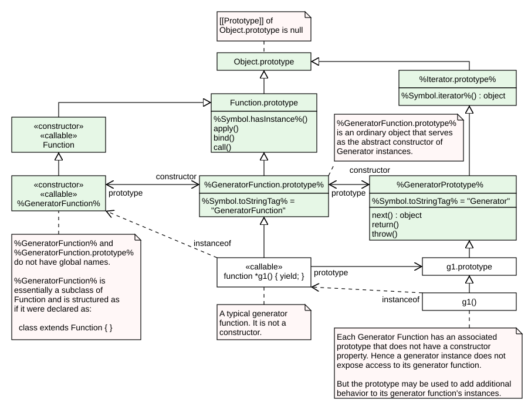

27 Control Abstraction Objects
27.1 Iteration
27.1.1 Common Iteration Interfaces
An interface is a set of
27.1.1.1 The Iterable Interface
The iterable interface includes the properties described in
| Property | Value | Requirements |
|---|---|---|
%Symbol.iterator%
|
a function that returns an |
The returned object must conform to the |
27.1.1.2 The Iterator Interface
An object that implements the iterator interface must include the property in
| Property | Value | Requirements |
|---|---|---|
|
|
a function that returns an |
The returned object must conform to the next method of an iterator has returned an next method of that object should also return an |
Arguments may be passed to the next function but their interpretation and validity is dependent upon the target iterator. The for-of statement and other common users of iterators do not pass any arguments, so iterator objects that expect to be used in such a manner must be prepared to deal with being called with no arguments.
| Property | Value | Requirements |
|---|---|---|
|
|
a function that returns an |
The returned object must conform to the next method calls to the iterator. The returned return method. However, this requirement is not enforced.
|
|
|
a function that returns an |
The returned object must conform to the throw the value passed as the argument. If the method does not throw, the returned |
Typically callers of these methods should check for their existence before invoking them. Certain ECMAScript language features including for-of, yield*, and array destructuring call these methods after performing an existence check. Most ECMAScript library functions that accept
27.1.1.3 The Async Iterable Interface
The async iterable interface includes the properties described in
| Property | Value | Requirements |
|---|---|---|
%Symbol.asyncIterator% |
a function that returns an |
The returned object must conform to the |
27.1.1.4 The Async Iterator Interface
An object that implements the async iterator interface must include the properties in
| Property | Value | Requirements |
|---|---|---|
| a function that returns a promise for an |
The returned promise, when fulfilled, must fulfill with an object that conforms to the Additionally, the |
Arguments may be passed to the next function but their interpretation and validity is dependent upon the target async iterator. The for-await-of statement and other common users of async iterators do not pass any arguments, so async iterator objects that expect to be used in such a manner must be prepared to deal with being called with no arguments.
| Property | Value | Requirements |
|---|---|---|
| a function that returns a promise for an |
The returned promise, when fulfilled, must fulfill with an object that conforms to the Additionally, the |
|
| a function that returns a promise for an |
The returned promise, when fulfilled, must fulfill with an object that conforms to the If the returned promise is fulfilled, the |
Typically callers of these methods should check for their existence before invoking them. Certain ECMAScript language features including for-await-of and yield* call these methods after performing an existence check.
27.1.1.5 The IteratorResult Interface
The IteratorResult interface includes the properties listed in
| Property | Value | Requirements |
|---|---|---|
|
|
a Boolean |
This is the result status of an next method call. If the end of the |
|
|
an |
If done is |
27.1.2 Iterator Helper Objects
An Iterator Helper object is an
27.1.2.1 The %IteratorHelperPrototype% Object
The
- has properties that are inherited by all
Iterator Helper objects . - is an
ordinary object . - has a [[Prototype]] internal slot whose value is
%Iterator.prototype% . - has the following properties:
27.1.2.1.1 %IteratorHelperPrototype% .next ( )
- Return ?
GeneratorResume (this value,undefined ,"Iterator Helper" ).
27.1.2.1.2 %IteratorHelperPrototype% .return ( )
- Let obj be
this value. - Perform ?
RequireInternalSlot (obj, [[UnderlyingIterators]]). Assert : obj has a [[GeneratorState]] internal slot.- If obj.[[GeneratorState]] is
suspended-start , then- Set obj.[[GeneratorState]] to
completed . NOTE : Once a generator enters the completed state it never leaves it and its associatedexecution context is never resumed. Any execution state associated with obj can be discarded at this point.- Perform ?
IteratorCloseAll (obj.[[UnderlyingIterators]],NormalCompletion (unused )). - Return
CreateIteratorResultObject (undefined ,true ).
- Set obj.[[GeneratorState]] to
- Let completion be
ReturnCompletion (undefined ). - Return ?
GeneratorResumeAbrupt (obj, completion,"Iterator Helper" ).
27.1.2.1.3 %IteratorHelperPrototype% [ %Symbol.toStringTag% ]
The initial value of the
This property has the attributes { [[Writable]]:
27.1.3 Iterator Objects
27.1.3.1 The Iterator Constructor
The Iterator
- is
%Iterator% . - is the initial value of the
"Iterator" property of theglobal object . - is designed to be subclassable. It may be used as the value of an
extends clause of a class definition.
27.1.3.1.1 Iterator ( )
This function performs the following steps when called:
- If NewTarget is either
undefined or theactive function object , throw aTypeError exception. - Return ?
OrdinaryCreateFromConstructor (NewTarget," ).%Iterator.prototype% "
27.1.3.2 Properties of the Iterator Constructor
The
- has a [[Prototype]] internal slot whose value is
%Function.prototype% . - has the following properties:
27.1.3.2.1 Iterator.concat ( …items )
- Let iterables be a new empty
List . - For each element item of items, do
- If item
is not an Object , throw aTypeError exception. - Let method be ?
GetMethod (item,%Symbol.iterator% ). - If method is
undefined , throw aTypeError exception. - Append the
Record { [[OpenMethod]]: method, [[Iterable]]: item } to iterables.
- If item
- Let closure be a new
Abstract Closure with no parameters that captures iterables and performs the following steps when called:- For each
Record iterable of iterables, do- Let iterator be ?
Call (iterable.[[OpenMethod]], iterable.[[Iterable]]). - If iterator
is not an Object , throw aTypeError exception. - Let iteratorRecord be ?
GetIteratorDirect (iterator). - Let innerAlive be
true . - Repeat, while innerAlive is
true ,- Let innerValue be ?
IteratorStepValue (iteratorRecord). - If innerValue is
done , then- Set innerAlive to
false .
- Set innerAlive to
- Else,
- Let completion be
Completion (Yield (innerValue)). - If completion is an
abrupt completion , then- Return ?
IteratorClose (iteratorRecord, completion).
- Return ?
- Let completion be
- Let innerValue be ?
- Let iterator be ?
- Return
ReturnCompletion (undefined ).
- For each
- Let gen be
CreateIteratorFromClosure (closure,"Iterator Helper" ,%IteratorHelperPrototype% , « [[UnderlyingIterators]] »). - Set gen.[[UnderlyingIterators]] to a new empty
List . - Return gen.
27.1.3.2.2 Iterator.from ( obj )
- Let iteratorRecord be ?
GetIteratorFlattenable (obj,iterate-string-primitives ). - Let hasInstance be ?
OrdinaryHasInstance (%Iterator% , iteratorRecord.[[Iterator]]). - If hasInstance is
true , then- Return iteratorRecord.[[Iterator]].
- Let wrapper be
OrdinaryObjectCreate (%WrapForValidIteratorPrototype% , « [[Iterated]] »). - Set wrapper.[[Iterated]] to iteratorRecord.
- Return wrapper.
27.1.3.2.2.1 The %WrapForValidIteratorPrototype% Object
The
- is an
ordinary object . - has a [[Prototype]] internal slot whose value is
%Iterator.prototype% .
27.1.3.2.2.1.1 %WrapForValidIteratorPrototype% .next ( )
- Let obj be
this value. - Perform ?
RequireInternalSlot (obj, [[Iterated]]). - Let iteratorRecord be obj.[[Iterated]].
- Return ?
Call (iteratorRecord.[[NextMethod]], iteratorRecord.[[Iterator]]).
27.1.3.2.2.1.2 %WrapForValidIteratorPrototype% .return ( )
- Let obj be
this value. - Perform ?
RequireInternalSlot (obj, [[Iterated]]). - Let iterator be obj.[[Iterated]].[[Iterator]].
Assert : iteratoris an Object .- Let returnMethod be ?
GetMethod (iterator,"return" ). - If returnMethod is
undefined , then- Return
CreateIteratorResultObject (undefined ,true ).
- Return
- Return ?
Call (returnMethod, iterator).
27.1.3.2.3 Iterator.prototype
The initial value of
This property has the attributes { [[Writable]]:
27.1.3.2.4 Iterator.zip ( iterables [ , options ] )
This function performs the following steps when called:
- If iterables
is not an Object , throw aTypeError exception. - Set options to ?
GetOptionsObject (options). - Let mode be ?
Get (options,"mode" ). - If mode is
undefined , set mode to"shortest" . - If mode is not one of
"shortest" ,"longest" , or"strict" , throw aTypeError exception. - Let paddingOption be
undefined . - If mode is
"longest" , then- Set paddingOption to ?
Get (options,"padding" ). - If paddingOption is not
undefined and paddingOptionis not an Object , throw aTypeError exception.
- Set paddingOption to ?
- Let iters be a new empty
List . - Let padding be a new empty
List . - Let inputIter be ?
GetIterator (iterables,sync ). - Let next be
not-started . - Repeat, while next is not
done ,- Set next to
Completion (IteratorStepValue (inputIter)). IfAbruptCloseIterators (next, iters).- If next is not
done , then- Let iter be
Completion (GetIteratorFlattenable (next,reject-primitives )). - Let needClosing be the
list-concatenation of « inputIter » and iters. IfAbruptCloseIterators (iter, needClosing).- Append iter to iters.
- Let iter be
- Set next to
- Let iterCount be the number of elements in iters.
- If mode is
"longest" , then- If paddingOption is
undefined , then- Repeat iterCount times:
- Append
undefined to padding.
- Append
- Repeat iterCount times:
- Else,
- Let paddingIter be
Completion (GetIterator (paddingOption,sync )). IfAbruptCloseIterators (paddingIter, iters).- Let usingIterator be
true . - Repeat iterCount times:
- If usingIterator is
true , then- Set next to
Completion (IteratorStepValue (paddingIter)). IfAbruptCloseIterators (next, iters).- If next is
done , then- Set usingIterator to
false .
- Set usingIterator to
- Else,
- Append next to padding.
- Set next to
- If usingIterator is
false , appendundefined to padding.
- If usingIterator is
- If usingIterator is
true , then- Let completion be
Completion (IteratorClose (paddingIter,NormalCompletion (unused ))). IfAbruptCloseIterators (completion, iters).
- Let completion be
- Let paddingIter be
- If paddingOption is
- Let finishResults be a new
Abstract Closure with parameters (results) that captures nothing and performs the following steps when called:- Return
CreateArrayFromList (results).
- Return
- Return
IteratorZip (iters, mode, padding, finishResults).
27.1.3.2.5 Iterator.zipKeyed ( iterables [ , options ] )
This function performs the following steps when called:
- If iterables
is not an Object , throw aTypeError exception. - Set options to ?
GetOptionsObject (options). - Let mode be ?
Get (options,"mode" ). - If mode is
undefined , set mode to"shortest" . - If mode is not one of
"shortest" ,"longest" , or"strict" , throw aTypeError exception. - Let paddingOption be
undefined . - If mode is
"longest" , then- Set paddingOption to ?
Get (options,"padding" ). - If paddingOption is not
undefined and paddingOptionis not an Object , throw aTypeError exception.
- Set paddingOption to ?
- Let iters be a new empty
List . - Let padding be a new empty
List . - Let allKeys be ? iterables.[[OwnPropertyKeys]]().
- Let keys be a new empty
List . - For each element key of allKeys, do
- Let propertyDesc be
Completion (iterables.[[GetOwnProperty]](key)). IfAbruptCloseIterators (propertyDesc, iters).- If propertyDesc is not
undefined and propertyDesc.[[Enumerable]] istrue , then- Let value be
Completion (Get (iterables, key)). IfAbruptCloseIterators (value, iters).- If value is not
undefined , then- Append key to keys.
- Let iter be
Completion (GetIteratorFlattenable (value,reject-primitives )). IfAbruptCloseIterators (iter, iters).- Append iter to iters.
- Let value be
- Let propertyDesc be
- Let iterCount be the number of elements in iters.
- If mode is
"longest" , then- If paddingOption is
undefined , then- Repeat iterCount times:
- Append
undefined to padding.
- Append
- Repeat iterCount times:
- Else,
- For each element key of keys, do
- Let value be
Completion (Get (paddingOption, key)). IfAbruptCloseIterators (value, iters).- Append value to padding.
- Let value be
- For each element key of keys, do
- If paddingOption is
- Let finishResults be a new
Abstract Closure with parameters (results) that captures keys and iterCount and performs the following steps when called:- Let obj be
OrdinaryObjectCreate (null ). - For each
integer i such that 0 ≤ i < iterCount, in ascending order, do- Perform !
CreateDataPropertyOrThrow (obj, keys[i], results[i]).
- Perform !
- Return obj.
- Let obj be
- Return
IteratorZip (iters, mode, padding, finishResults).
27.1.3.3 Properties of the Iterator Prototype Object
The Iterator prototype object:
- is
%Iterator.prototype% . - has a [[Prototype]] internal slot whose value is
%Object.prototype% . - is an
ordinary object .
All objects defined in this specification that implement the
The following expression is one way that ECMAScript code can access the
Object.getPrototypeOf(Object.getPrototypeOf([][Symbol.iterator]()))27.1.3.3.1 Iterator.prototype.constructor
Iterator.prototype.constructor is an
27.1.3.3.1.1 get Iterator.prototype.constructor
The value of the [[Get]] attribute is a built-in function that requires no arguments. It performs the following steps when called:
- Return
%Iterator% .
27.1.3.3.1.2 set Iterator.prototype.constructor
The value of the [[Set]] attribute is a built-in function that takes an argument v. It performs the following steps when called:
- Perform ?
SetterThatIgnoresPrototypeProperties (this value,%Iterator.prototype% ,"constructor" , v). - Return
undefined .
Unlike the
27.1.3.3.2 Iterator.prototype.drop ( limit )
This method performs the following steps when called:
- Let obj be the
this value. - If obj
is not an Object , throw aTypeError exception. - Let iterated be the
Iterator Record { [[Iterator]]: obj, [[NextMethod]]:undefined , [[Done]]:false }. - Let numberLimit be
Completion (ToNumber (limit)). IfAbruptCloseIterator (numberLimit, iterated).- If numberLimit is
NaN , then- Let error be
ThrowCompletion (a newly createdRangeError object). - Return ?
IteratorClose (iterated, error).
- Let error be
- Let intLimit be !
ToIntegerOrInfinity (numberLimit). - If intLimit < 0, then
- Let error be
ThrowCompletion (a newly createdRangeError object). - Return ?
IteratorClose (iterated, error).
- Let error be
- Set iterated to ?
GetIteratorDirect (obj). - Let closure be a new
Abstract Closure with no parameters that captures iterated and intLimit and performs the following steps when called:- Let remaining be intLimit.
- Repeat, while remaining > 0,
- If remaining ≠ +∞, then
- Set remaining to remaining - 1.
- Let next be ?
IteratorStep (iterated). - If next is
done , returnReturnCompletion (undefined ).
- If remaining ≠ +∞, then
- Repeat,
- Let value be ?
IteratorStepValue (iterated). - If value is
done , returnReturnCompletion (undefined ). - Let completion be
Completion (Yield (value)). IfAbruptCloseIterator (completion, iterated).
- Let value be ?
- Let result be
CreateIteratorFromClosure (closure,"Iterator Helper" ,%IteratorHelperPrototype% , « [[UnderlyingIterators]] »). - Set result.[[UnderlyingIterators]] to « iterated ».
- Return result.
27.1.3.3.3 Iterator.prototype.every ( predicate )
This method performs the following steps when called:
- Let obj be the
this value. - If obj
is not an Object , throw aTypeError exception. - Let iterated be the
Iterator Record { [[Iterator]]: obj, [[NextMethod]]:undefined , [[Done]]:false }. - If
IsCallable (predicate) isfalse , then- Let error be
ThrowCompletion (a newly createdTypeError object). - Return ?
IteratorClose (iterated, error).
- Let error be
- Set iterated to ?
GetIteratorDirect (obj). - Let counter be 0.
- Repeat,
- Let value be ?
IteratorStepValue (iterated). - If value is
done , returntrue . - Let result be
Completion (Call (predicate,undefined , « value,𝔽 (counter) »)). IfAbruptCloseIterator (result, iterated).- If
ToBoolean (result) isfalse , return ?IteratorClose (iterated,NormalCompletion (false )). - Set counter to counter + 1.
- Let value be ?
27.1.3.3.4 Iterator.prototype.filter ( predicate )
This method performs the following steps when called:
- Let obj be the
this value. - If obj
is not an Object , throw aTypeError exception. - Let iterated be the
Iterator Record { [[Iterator]]: obj, [[NextMethod]]:undefined , [[Done]]:false }. - If
IsCallable (predicate) isfalse , then- Let error be
ThrowCompletion (a newly createdTypeError object). - Return ?
IteratorClose (iterated, error).
- Let error be
- Set iterated to ?
GetIteratorDirect (obj). - Let closure be a new
Abstract Closure with no parameters that captures iterated and predicate and performs the following steps when called:- Let counter be 0.
- Repeat,
- Let value be ?
IteratorStepValue (iterated). - If value is
done , returnReturnCompletion (undefined ). - Let selected be
Completion (Call (predicate,undefined , « value,𝔽 (counter) »)). IfAbruptCloseIterator (selected, iterated).- If
ToBoolean (selected) istrue , then- Let completion be
Completion (Yield (value)). IfAbruptCloseIterator (completion, iterated).
- Let completion be
- Set counter to counter + 1.
- Let value be ?
- Let result be
CreateIteratorFromClosure (closure,"Iterator Helper" ,%IteratorHelperPrototype% , « [[UnderlyingIterators]] »). - Set result.[[UnderlyingIterators]] to « iterated ».
- Return result.
27.1.3.3.5 Iterator.prototype.find ( predicate )
This method performs the following steps when called:
- Let obj be the
this value. - If obj
is not an Object , throw aTypeError exception. - Let iterated be the
Iterator Record { [[Iterator]]: obj, [[NextMethod]]:undefined , [[Done]]:false }. - If
IsCallable (predicate) isfalse , then- Let error be
ThrowCompletion (a newly createdTypeError object). - Return ?
IteratorClose (iterated, error).
- Let error be
- Set iterated to ?
GetIteratorDirect (obj). - Let counter be 0.
- Repeat,
- Let value be ?
IteratorStepValue (iterated). - If value is
done , returnundefined . - Let result be
Completion (Call (predicate,undefined , « value,𝔽 (counter) »)). IfAbruptCloseIterator (result, iterated).- If
ToBoolean (result) istrue , return ?IteratorClose (iterated,NormalCompletion (value)). - Set counter to counter + 1.
- Let value be ?
27.1.3.3.6 Iterator.prototype.flatMap ( mapper )
This method performs the following steps when called:
- Let obj be the
this value. - If obj
is not an Object , throw aTypeError exception. - Let iterated be the
Iterator Record { [[Iterator]]: obj, [[NextMethod]]:undefined , [[Done]]:false }. - If
IsCallable (mapper) isfalse , then- Let error be
ThrowCompletion (a newly createdTypeError object). - Return ?
IteratorClose (iterated, error).
- Let error be
- Set iterated to ?
GetIteratorDirect (obj). - Let closure be a new
Abstract Closure with no parameters that captures iterated and mapper and performs the following steps when called:- Let counter be 0.
- Repeat,
- Let value be ?
IteratorStepValue (iterated). - If value is
done , returnReturnCompletion (undefined ). - Let mapped be
Completion (Call (mapper,undefined , « value,𝔽 (counter) »)). IfAbruptCloseIterator (mapped, iterated).- Let innerIterator be
Completion (GetIteratorFlattenable (mapped,reject-primitives )). IfAbruptCloseIterator (innerIterator, iterated).- Let innerAlive be
true . - Repeat, while innerAlive is
true ,- Let innerValue be
Completion (IteratorStepValue (innerIterator)). IfAbruptCloseIterator (innerValue, iterated).- If innerValue is
done , then- Set innerAlive to
false .
- Set innerAlive to
- Else,
- Let completion be
Completion (Yield (innerValue)). - If completion is an
abrupt completion , then- Let backupCompletion be
Completion (IteratorClose (innerIterator, completion)). IfAbruptCloseIterator (backupCompletion, iterated).- Return ?
IteratorClose (iterated, completion).
- Let backupCompletion be
- Let completion be
- Let innerValue be
- Set counter to counter + 1.
- Let value be ?
- Let result be
CreateIteratorFromClosure (closure,"Iterator Helper" ,%IteratorHelperPrototype% , « [[UnderlyingIterators]] »). - Set result.[[UnderlyingIterators]] to « iterated ».
- Return result.
27.1.3.3.7 Iterator.prototype.forEach ( procedure )
This method performs the following steps when called:
- Let obj be the
this value. - If obj
is not an Object , throw aTypeError exception. - Let iterated be the
Iterator Record { [[Iterator]]: obj, [[NextMethod]]:undefined , [[Done]]:false }. - If
IsCallable (procedure) isfalse , then- Let error be
ThrowCompletion (a newly createdTypeError object). - Return ?
IteratorClose (iterated, error).
- Let error be
- Set iterated to ?
GetIteratorDirect (obj). - Let counter be 0.
- Repeat,
- Let value be ?
IteratorStepValue (iterated). - If value is
done , returnundefined . - Let result be
Completion (Call (procedure,undefined , « value,𝔽 (counter) »)). IfAbruptCloseIterator (result, iterated).- Set counter to counter + 1.
- Let value be ?
27.1.3.3.8 Iterator.prototype.map ( mapper )
This method performs the following steps when called:
- Let obj be the
this value. - If obj
is not an Object , throw aTypeError exception. - Let iterated be the
Iterator Record { [[Iterator]]: obj, [[NextMethod]]:undefined , [[Done]]:false }. - If
IsCallable (mapper) isfalse , then- Let error be
ThrowCompletion (a newly createdTypeError object). - Return ?
IteratorClose (iterated, error).
- Let error be
- Set iterated to ?
GetIteratorDirect (obj). - Let closure be a new
Abstract Closure with no parameters that captures iterated and mapper and performs the following steps when called:- Let counter be 0.
- Repeat,
- Let value be ?
IteratorStepValue (iterated). - If value is
done , returnReturnCompletion (undefined ). - Let mapped be
Completion (Call (mapper,undefined , « value,𝔽 (counter) »)). IfAbruptCloseIterator (mapped, iterated).- Let completion be
Completion (Yield (mapped)). IfAbruptCloseIterator (completion, iterated).- Set counter to counter + 1.
- Let value be ?
- Let result be
CreateIteratorFromClosure (closure,"Iterator Helper" ,%IteratorHelperPrototype% , « [[UnderlyingIterators]] »). - Set result.[[UnderlyingIterators]] to « iterated ».
- Return result.
27.1.3.3.9 Iterator.prototype.reduce ( reducer [ , initialValue ] )
This method performs the following steps when called:
- Let obj be the
this value. - If obj
is not an Object , throw aTypeError exception. - Let iterated be the
Iterator Record { [[Iterator]]: obj, [[NextMethod]]:undefined , [[Done]]:false }. - If
IsCallable (reducer) isfalse , then- Let error be
ThrowCompletion (a newly createdTypeError object). - Return ?
IteratorClose (iterated, error).
- Let error be
- Set iterated to ?
GetIteratorDirect (obj). - If initialValue is not present, then
- Let accumulator be ?
IteratorStepValue (iterated). - If accumulator is
done , throw aTypeError exception. - Let counter be 1.
- Let accumulator be ?
- Else,
- Let accumulator be initialValue.
- Let counter be 0.
- Repeat,
- Let value be ?
IteratorStepValue (iterated). - If value is
done , return accumulator. - Let result be
Completion (Call (reducer,undefined , « accumulator, value,𝔽 (counter) »)). IfAbruptCloseIterator (result, iterated).- Set accumulator to result.
- Set counter to counter + 1.
- Let value be ?
27.1.3.3.10 Iterator.prototype.some ( predicate )
This method performs the following steps when called:
- Let obj be the
this value. - If obj
is not an Object , throw aTypeError exception. - Let iterated be the
Iterator Record { [[Iterator]]: obj, [[NextMethod]]:undefined , [[Done]]:false }. - If
IsCallable (predicate) isfalse , then- Let error be
ThrowCompletion (a newly createdTypeError object). - Return ?
IteratorClose (iterated, error).
- Let error be
- Set iterated to ?
GetIteratorDirect (obj). - Let counter be 0.
- Repeat,
- Let value be ?
IteratorStepValue (iterated). - If value is
done , returnfalse . - Let result be
Completion (Call (predicate,undefined , « value,𝔽 (counter) »)). IfAbruptCloseIterator (result, iterated).- If
ToBoolean (result) istrue , return ?IteratorClose (iterated,NormalCompletion (true )). - Set counter to counter + 1.
- Let value be ?
27.1.3.3.11 Iterator.prototype.take ( limit )
This method performs the following steps when called:
- Let obj be the
this value. - If obj
is not an Object , throw aTypeError exception. - Let iterated be the
Iterator Record { [[Iterator]]: obj, [[NextMethod]]:undefined , [[Done]]:false }. - Let numberLimit be
Completion (ToNumber (limit)). IfAbruptCloseIterator (numberLimit, iterated).- If numberLimit is
NaN , then- Let error be
ThrowCompletion (a newly createdRangeError object). - Return ?
IteratorClose (iterated, error).
- Let error be
- Let intLimit be !
ToIntegerOrInfinity (numberLimit). - If intLimit < 0, then
- Let error be
ThrowCompletion (a newly createdRangeError object). - Return ?
IteratorClose (iterated, error).
- Let error be
- Set iterated to ?
GetIteratorDirect (obj). - Let closure be a new
Abstract Closure with no parameters that captures iterated and intLimit and performs the following steps when called:- Let remaining be intLimit.
- Repeat,
- If remaining = 0, then
- Return ?
IteratorClose (iterated,ReturnCompletion (undefined )).
- Return ?
- If remaining ≠ +∞, then
- Set remaining to remaining - 1.
- Let value be ?
IteratorStepValue (iterated). - If value is
done , returnReturnCompletion (undefined ). - Let completion be
Completion (Yield (value)). IfAbruptCloseIterator (completion, iterated).
- If remaining = 0, then
- Let result be
CreateIteratorFromClosure (closure,"Iterator Helper" ,%IteratorHelperPrototype% , « [[UnderlyingIterators]] »). - Set result.[[UnderlyingIterators]] to « iterated ».
- Return result.
27.1.3.3.12 Iterator.prototype.toArray ( )
This method performs the following steps when called:
- Let obj be the
this value. - If obj
is not an Object , throw aTypeError exception. - Let iterated be ?
GetIteratorDirect (obj). - Let items be a new empty
List . - Repeat,
- Let value be ?
IteratorStepValue (iterated). - If value is
done , returnCreateArrayFromList (items). - Append value to items.
- Let value be ?
27.1.3.3.13 Iterator.prototype [ %Symbol.iterator% ] ( )
This function performs the following steps when called:
- Return the
this value.
The value of the
27.1.3.3.14 Iterator.prototype [ %Symbol.toStringTag% ]
Iterator.prototype[%Symbol.toStringTag%] is an
27.1.3.3.14.1 get Iterator.prototype [ %Symbol.toStringTag% ]
The value of the [[Get]] attribute is a built-in function that requires no arguments. It performs the following steps when called:
- Return
"Iterator" .
27.1.3.3.14.2 set Iterator.prototype [ %Symbol.toStringTag% ]
The value of the [[Set]] attribute is a built-in function that takes an argument v. It performs the following steps when called:
- Perform ?
SetterThatIgnoresPrototypeProperties (this value,%Iterator.prototype% ,%Symbol.toStringTag% , v). - Return
undefined .
Unlike the
27.1.3.4 Abstract Operations for Iterators
27.1.3.4.1 IteratorZip ( iters, mode, padding, finishResults )
The abstract operation IteratorZip takes arguments iters (a
- Let iterCount be the number of elements in iters.
- Let openIters be a copy of iters.
- Let closure be a new
Abstract Closure with no parameters that captures iters, iterCount, openIters, mode, padding, and finishResults and performs the following steps when called:- If iterCount = 0, return
ReturnCompletion (undefined ). - Repeat,
- Let results be a new empty
List . Assert : openIters is not empty.- For each
integer i such that 0 ≤ i < iterCount, in ascending order, do- Let iter be iters[i].
- If iter is
null , thenAssert : mode is"longest" .- Let result be padding[i].
- Else,
- Let result be
Completion (IteratorStepValue (iter)). - If result is an
abrupt completion , then- Remove iter from openIters.
- Return ?
IteratorCloseAll (openIters, result).
- Set result to ! result.
- If result is
done , then- Remove iter from openIters.
- If mode is
"shortest" , then- Return ?
IteratorCloseAll (openIters,ReturnCompletion (undefined )).
- Return ?
- Else if mode is
"strict" , then- If i ≠ 0, then
- Return ?
IteratorCloseAll (openIters,ThrowCompletion (a newly createdTypeError object)).
- Return ?
- For each
integer k such that 1 ≤ k < iterCount, in ascending order, doAssert : iters[k] is notnull .- Let open be
Completion (IteratorStep (iters[k])). - If open is an
abrupt completion , then- Remove iters[k] from openIters.
- Return ?
IteratorCloseAll (openIters, open).
- Set open to ! open.
- If open is
done , then- Remove iters[k] from openIters.
- Else,
- Return ?
IteratorCloseAll (openIters,ThrowCompletion (a newly createdTypeError object)).
- Return ?
- Return
ReturnCompletion (undefined ).
- If i ≠ 0, then
- Else,
Assert : mode is"longest" .- If openIters is empty, return
ReturnCompletion (undefined ). - Set iters[i] to
null . - Set result to padding[i].
- Let result be
- Append result to results.
- Set results to finishResults(results).
- Let completion be
Completion (Yield (results)). IfAbruptCloseIterators (completion, openIters).
- Let results be a new empty
- If iterCount = 0, return
- Let gen be
CreateIteratorFromClosure (closure,"Iterator Helper" ,%IteratorHelperPrototype% , « [[UnderlyingIterators]] »). - Set gen.[[UnderlyingIterators]] to openIters.
- Return gen.
27.1.4 The %AsyncIteratorPrototype% Object
The
- has a [[Prototype]] internal slot whose value is
%Object.prototype% . - is an
ordinary object .
All objects defined in this specification that implement the
27.1.4.1 %AsyncIteratorPrototype% [ %Symbol.asyncIterator% ] ( )
This function performs the following steps when called:
- Return the
this value.
The value of the
27.1.5 Async-from-Sync Iterator Objects
An Async-from-Sync Iterator object is an
27.1.5.1 CreateAsyncFromSyncIterator ( syncIteratorRecord )
The abstract operation CreateAsyncFromSyncIterator takes argument syncIteratorRecord (an
- Let asyncIterator be
OrdinaryObjectCreate (%AsyncFromSyncIteratorPrototype% , « [[SyncIteratorRecord]] »). - Set asyncIterator.[[SyncIteratorRecord]] to syncIteratorRecord.
- Let nextMethod be !
Get (asyncIterator,"next" ). - Let iteratorRecord be the
Iterator Record { [[Iterator]]: asyncIterator, [[NextMethod]]: nextMethod, [[Done]]:false }. - Return iteratorRecord.
27.1.5.2 The %AsyncFromSyncIteratorPrototype% Object
The
- has properties that are inherited by all
Async-from-Sync Iterator objects . - is an
ordinary object . - has a [[Prototype]] internal slot whose value is
%AsyncIteratorPrototype% . - is never directly accessible to ECMAScript code.
- has the following properties:
27.1.5.2.1 %AsyncFromSyncIteratorPrototype% .next ( [ value ] )
- Let obj be the
this value. Assert : objis an Object that has a [[SyncIteratorRecord]] internal slot.- Let promiseCapability be !
NewPromiseCapability (%Promise% ). - Let syncIteratorRecord be obj.[[SyncIteratorRecord]].
- If value is present, then
- Let result be
Completion (IteratorNext (syncIteratorRecord, value)).
- Let result be
- Else,
- Let result be
Completion (IteratorNext (syncIteratorRecord)).
- Let result be
IfAbruptRejectPromise (result, promiseCapability).- Return
AsyncFromSyncIteratorContinuation (result, promiseCapability, syncIteratorRecord,true ).
27.1.5.2.2 %AsyncFromSyncIteratorPrototype% .return ( [ value ] )
- Let obj be the
this value. Assert : objis an Object that has a [[SyncIteratorRecord]] internal slot.- Let promiseCapability be !
NewPromiseCapability (%Promise% ). - Let syncIteratorRecord be obj.[[SyncIteratorRecord]].
- Let syncIterator be syncIteratorRecord.[[Iterator]].
- Let return be
Completion (GetMethod (syncIterator,"return" )). IfAbruptRejectPromise (return, promiseCapability).- If return is
undefined , then- Let iteratorResult be
CreateIteratorResultObject (value,true ). - Perform !
Call (promiseCapability.[[Resolve]],undefined , « iteratorResult ») - Return promiseCapability.[[Promise]].
- Let iteratorResult be
- If value is present, then
- Let result be
Completion (Call (return, syncIterator, « value »)).
- Let result be
- Else,
- Let result be
Completion (Call (return, syncIterator)).
- Let result be
IfAbruptRejectPromise (result, promiseCapability).- If result
is not an Object , then- Perform !
Call (promiseCapability.[[Reject]],undefined , « a newly createdTypeError object »). - Return promiseCapability.[[Promise]].
- Perform !
- Return
AsyncFromSyncIteratorContinuation (result, promiseCapability, syncIteratorRecord,false ).
27.1.5.2.3 %AsyncFromSyncIteratorPrototype% .throw ( [ value ] )
- Let obj be the
this value. Assert : objis an Object that has a [[SyncIteratorRecord]] internal slot.- Let promiseCapability be !
NewPromiseCapability (%Promise% ). - Let syncIteratorRecord be obj.[[SyncIteratorRecord]].
- Let syncIterator be syncIteratorRecord.[[Iterator]].
- Let throw be
Completion (GetMethod (syncIterator,"throw" )). IfAbruptRejectPromise (throw, promiseCapability).- If throw is
undefined , thenNOTE : If syncIterator does not have athrowmethod, close it to give it a chance to clean up before we reject the capability.- Let closeCompletion be
NormalCompletion (empty ). - Let result be
Completion (IteratorClose (syncIteratorRecord, closeCompletion)). IfAbruptRejectPromise (result, promiseCapability).NOTE : The next step throws aTypeError to indicate that there was a protocol violation: syncIterator does not have athrowmethod.NOTE : If closing syncIterator does not throw then the result of that operation is ignored, even if it yields a rejected promise.- Perform !
Call (promiseCapability.[[Reject]],undefined , « a newly createdTypeError object »). - Return promiseCapability.[[Promise]].
- If value is present, then
- Let result be
Completion (Call (throw, syncIterator, « value »)).
- Let result be
- Else,
- Let result be
Completion (Call (throw, syncIterator)).
- Let result be
IfAbruptRejectPromise (result, promiseCapability).- If result
is not an Object , then- Perform !
Call (promiseCapability.[[Reject]],undefined , « a newly createdTypeError object »). - Return promiseCapability.[[Promise]].
- Perform !
- Return
AsyncFromSyncIteratorContinuation (result, promiseCapability, syncIteratorRecord,true ).
27.1.5.3 Properties of Async-from-Sync Iterator Instances
Async-from-Sync
| Internal Slot | Type | Description |
|---|---|---|
| [[SyncIteratorRecord]] |
an |
Represents the original synchronous |
27.1.5.4 AsyncFromSyncIteratorContinuation ( result, promiseCapability, syncIteratorRecord, closeOnRejection )
The abstract operation AsyncFromSyncIteratorContinuation takes arguments result (an Object), promiseCapability (a
NOTE : Because promiseCapability is derived from the intrinsic%Promise% , the calls to promiseCapability.[[Reject]] entailed by the useIfAbruptRejectPromise below are guaranteed not to throw.- Let done be
Completion (IteratorComplete (result)). IfAbruptRejectPromise (done, promiseCapability).- Let value be
Completion (IteratorValue (result)). IfAbruptRejectPromise (value, promiseCapability).- Let valueWrapper be
Completion (PromiseResolve (%Promise% , value)). - If valueWrapper is an
abrupt completion , done isfalse , and closeOnRejection istrue , then- Set valueWrapper to
Completion (IteratorClose (syncIteratorRecord, valueWrapper)).
- Set valueWrapper to
IfAbruptRejectPromise (valueWrapper, promiseCapability).- Let unwrap be a new
Abstract Closure with parameters (v) that captures done and performs the following steps when called:- Return
CreateIteratorResultObject (v, done).
- Return
- Let onFulfilled be
CreateBuiltinFunction (unwrap, 1,"" , « »). NOTE : onFulfilled is used when processing the"value" property of anIteratorResult object in order to wait for its value if it is a promise and re-package the result in a new “unwrapped”IteratorResult object .- If done is
true or closeOnRejection isfalse , then- Let onRejected be
undefined .
- Let onRejected be
- Else,
- Let closeIterator be a new
Abstract Closure with parameters (error) that captures syncIteratorRecord and performs the following steps when called:- Return ?
IteratorClose (syncIteratorRecord,ThrowCompletion (error)).
- Return ?
- Let onRejected be
CreateBuiltinFunction (closeIterator, 1,"" , « »). NOTE : onRejected is used to close theIterator when the"value" property of anIteratorResult object it yields is a rejected promise.
- Let closeIterator be a new
- Perform
PerformPromiseThen (valueWrapper, onFulfilled, onRejected, promiseCapability). - Return promiseCapability.[[Promise]].
27.2 Promise Objects
A Promise is an object that is used as a placeholder for the eventual results of a deferred (and possibly asynchronous) computation.
Any Promise is in one of three mutually exclusive states: fulfilled, rejected, and pending:
-
A promise
pis fulfilled ifp.then(f, r)will immediately enqueue aJob to call the functionf. -
A promise
pis rejected ifp.then(f, r)will immediately enqueue aJob to call the functionr. - A promise is pending if it is neither fulfilled nor rejected.
A promise is said to be settled if it is not pending, i.e. if it is either fulfilled or rejected.
A promise is resolved if it is settled or if it has been “locked in” to match the state of another promise. Attempting to resolve or reject a resolved promise has no effect. A promise is unresolved if it is not resolved. An unresolved promise is always in the pending state. A resolved promise may be pending, fulfilled or rejected.
27.2.1 Promise Abstract Operations
27.2.1.1 PromiseCapability Records
A PromiseCapability Record is a
PromiseCapability Records have the fields listed in
| Field Name | Value | Meaning |
|---|---|---|
| [[Promise]] | an Object | An object that is usable as a promise. |
| [[Resolve]] |
a |
The function that is used to resolve the given promise. |
| [[Reject]] |
a |
The function that is used to reject the given promise. |
27.2.1.1.1 IfAbruptRejectPromise ( value, capability )
IfAbruptRejectPromise is a shorthand for a sequence of algorithm steps that use a
- IfAbruptRejectPromise(value, capability).
means the same thing as:
Assert : value is aCompletion Record .- If value is an
abrupt completion , then- Perform ?
Call (capability.[[Reject]],undefined , « value.[[Value]] »). - Return capability.[[Promise]].
- Perform ?
- Set value to ! value.
27.2.1.2 PromiseReaction Records
A PromiseReaction Record is a
PromiseReaction Records have the fields listed in
| Field Name | Value | Meaning |
|---|---|---|
| [[Capability]] |
a |
The capabilities of the promise for which this record provides a reaction handler. |
| [[Type]] |
|
The [[Type]] is used when [[Handler]] is |
| [[Handler]] |
a |
The function that should be applied to the incoming value, and whose return value will govern what happens to the derived promise. If [[Handler]] is |
27.2.1.3 CreateResolvingFunctions ( toResolve )
The abstract operation CreateResolvingFunctions takes argument toResolve (a Promise) and returns a
- Let promiseOrEmpty be the
Record { [[Value]]: toResolve }. - Let resolveSteps be a new
Abstract Closure with parameters (resolution) that captures promiseOrEmpty and performs the following steps when called:- If promiseOrEmpty.[[Value]] is
empty , returnundefined . - Let promise be promiseOrEmpty.[[Value]].
- Set promiseOrEmpty.[[Value]] to
empty . - If
SameValue (resolution, promise) istrue , then- Let selfResolutionError be a newly created
TypeError object. - Perform
RejectPromise (promise, selfResolutionError). - Return
undefined .
- Let selfResolutionError be a newly created
- If resolution
is not an Object , then- Perform
FulfillPromise (promise, resolution). - Return
undefined .
- Perform
- Let then be
Completion (Get (resolution,"then" )). - If then is an
abrupt completion , then- Perform
RejectPromise (promise, then.[[Value]]). - Return
undefined .
- Perform
- Let thenAction be then.[[Value]].
- If
IsCallable (thenAction) isfalse , then- Perform
FulfillPromise (promise, resolution). - Return
undefined .
- Perform
- Let thenJobCallback be
HostMakeJobCallback (thenAction). - Let job be
NewPromiseResolveThenableJob (promise, resolution, thenJobCallback). - Perform
HostEnqueuePromiseJob (job.[[Job]], job.[[Realm]]). - Return
undefined .
- If promiseOrEmpty.[[Value]] is
- Let resolve be
CreateBuiltinFunction (resolveSteps, 1,"" , « »). - Let rejectSteps be a new
Abstract Closure with parameters (reason) that captures promiseOrEmpty and performs the following steps when called:- If promiseOrEmpty.[[Value]] is
empty , returnundefined . - Let promise be promiseOrEmpty.[[Value]].
- Set promiseOrEmpty.[[Value]] to
empty . - Perform
RejectPromise (promise, reason). - Return
undefined .
- If promiseOrEmpty.[[Value]] is
- Let reject be
CreateBuiltinFunction (rejectSteps, 1,"" , « »). - Return the
Record { [[Resolve]]: resolve, [[Reject]]: reject }.
27.2.1.4 FulfillPromise ( promise, value )
The abstract operation FulfillPromise takes arguments promise (a Promise) and value (an
Assert : promise.[[PromiseState]] ispending .- Let reactions be promise.[[PromiseFulfillReactions]].
- Set promise.[[PromiseResult]] to value.
- Set promise.[[PromiseFulfillReactions]] to
undefined . - Set promise.[[PromiseRejectReactions]] to
undefined . - Set promise.[[PromiseState]] to
fulfilled . - Perform
TriggerPromiseReactions (reactions, value). - Return
unused .
27.2.1.5 NewPromiseCapability ( ctor )
The abstract operation NewPromiseCapability takes argument ctor (an resolve and reject functions. The promise plus the resolve and reject functions are used to initialize a new
- If
IsConstructor (ctor) isfalse , throw aTypeError exception. NOTE : ctor is assumed to be aconstructor function that supports the parameter conventions of the Promiseconstructor (see27.2.3.1 ).- Let resolvingFuncs be the
Record { [[Resolve]]:undefined , [[Reject]]:undefined }. - Let executorClosure be a new
Abstract Closure with parameters (resolve, reject) that captures resolvingFuncs and performs the following steps when called:- If resolvingFuncs.[[Resolve]] is not
undefined , throw aTypeError exception. - If resolvingFuncs.[[Reject]] is not
undefined , throw aTypeError exception. - Set resolvingFuncs.[[Resolve]] to resolve.
- Set resolvingFuncs.[[Reject]] to reject.
- Return
NormalCompletion (undefined ).
- If resolvingFuncs.[[Resolve]] is not
- Let executor be
CreateBuiltinFunction (executorClosure, 2,"" , « »). - Let promise be ?
Construct (ctor, « executor »). - If
IsCallable (resolvingFuncs.[[Resolve]]) isfalse , throw aTypeError exception. - If
IsCallable (resolvingFuncs.[[Reject]]) isfalse , throw aTypeError exception. - Return the
PromiseCapability Record { [[Promise]]: promise, [[Resolve]]: resolvingFuncs.[[Resolve]], [[Reject]]: resolvingFuncs.[[Reject]] }.
This abstract operation supports Promise subclassing, as it is generic on any
27.2.1.6 IsPromise ( arg )
The abstract operation IsPromise takes argument arg (an
- If arg
is not an Object , returnfalse . - If arg does not have a [[PromiseState]] internal slot, return
false . - Return
true .
27.2.1.7 RejectPromise ( promise, reason )
The abstract operation RejectPromise takes arguments promise (a Promise) and reason (an
Assert : promise.[[PromiseState]] ispending .- Let reactions be promise.[[PromiseRejectReactions]].
- Set promise.[[PromiseResult]] to reason.
- Set promise.[[PromiseFulfillReactions]] to
undefined . - Set promise.[[PromiseRejectReactions]] to
undefined . - Set promise.[[PromiseState]] to
rejected . - If promise.[[PromiseIsHandled]] is
false , performHostPromiseRejectionTracker (promise,"reject" ). - Perform
TriggerPromiseReactions (reactions, reason). - Return
unused .
27.2.1.8 TriggerPromiseReactions ( reactions, arg )
The abstract operation TriggerPromiseReactions takes arguments reactions (a
- For each element reaction of reactions, do
- Let job be
NewPromiseReactionJob (reaction, arg). - Perform
HostEnqueuePromiseJob (job.[[Job]], job.[[Realm]]).
- Let job be
- Return
unused .
27.2.1.9 HostPromiseRejectionTracker ( promise, operation )
The
The default implementation of HostPromiseRejectionTracker is to return
HostPromiseRejectionTracker is called in two scenarios:
- When a promise is rejected without any handlers, it is called with its operation argument set to
"reject" . - When a handler is added to a rejected promise for the first time, it is called with its operation argument set to
"handle" .
A typical implementation of HostPromiseRejectionTracker might try to notify developers of unhandled rejections, while also being careful to notify them if such previous notifications are later invalidated by new handlers being attached.
If operation is
27.2.2 Promise Jobs
27.2.2.1 NewPromiseReactionJob ( reaction, arg )
The abstract operation NewPromiseReactionJob takes arguments reaction (a
- Let job be a new
Job Abstract Closure with no parameters that captures reaction and arg and performs the following steps when called:- Let promiseCapability be reaction.[[Capability]].
- Let type be reaction.[[Type]].
- Let handler be reaction.[[Handler]].
- If handler is
empty , then- If type is
fulfill , then- Let handlerResult be
NormalCompletion (arg).
- Let handlerResult be
- Else,
Assert : type isreject .- Let handlerResult be
ThrowCompletion (arg).
- If type is
- Else,
- Let handlerResult be
Completion (HostCallJobCallback (handler,undefined , « arg »)).
- Let handlerResult be
- If promiseCapability is
undefined , thenAssert : handlerResult is not anabrupt completion .- Return
empty .
Assert : promiseCapability is aPromiseCapability Record .- If handlerResult is an
abrupt completion , then- Return ?
Call (promiseCapability.[[Reject]],undefined , « handlerResult.[[Value]] »).
- Return ?
- Return ?
Call (promiseCapability.[[Resolve]],undefined , « handlerResult.[[Value]] »).
- Let handlerRealm be
null . - If reaction.[[Handler]] is not
empty , then- Let getHandlerRealmResult be
Completion (GetFunctionRealm (reaction.[[Handler]].[[Callback]])). - If getHandlerRealmResult is a
normal completion , set handlerRealm to getHandlerRealmResult.[[Value]]. - Else, set handlerRealm to
the current Realm Record . NOTE : handlerRealm is nevernull unless the handler isundefined . When the handler is a revoked Proxy and no ECMAScript code runs, handlerRealm is used to create error objects.
- Let getHandlerRealmResult be
- Return the
Record { [[Job]]: job, [[Realm]]: handlerRealm }.
27.2.2.2 NewPromiseResolveThenableJob ( promiseToResolve, thenable, then )
The abstract operation NewPromiseResolveThenableJob takes arguments promiseToResolve (a Promise), thenable (an Object), and then (a
- Let job be a new
Job Abstract Closure with no parameters that captures promiseToResolve, thenable, and then and performs the following steps when called:- Let resolvingFuncs be
CreateResolvingFunctions (promiseToResolve). - Let thenCallResult be
Completion (HostCallJobCallback (then, thenable, « resolvingFuncs.[[Resolve]], resolvingFuncs.[[Reject]] »)). - If thenCallResult is an
abrupt completion , then- Return ?
Call (resolvingFuncs.[[Reject]],undefined , « thenCallResult.[[Value]] »).
- Return ?
- Return ! thenCallResult.
- Let resolvingFuncs be
- Let getThenRealmResult be
Completion (GetFunctionRealm (then.[[Callback]])). - If getThenRealmResult is a
normal completion , let thenRealm be getThenRealmResult.[[Value]]. - Else, let thenRealm be
the current Realm Record . NOTE : thenRealm is nevernull . When then.[[Callback]] is a revoked Proxy and no code runs, thenRealm is used to create error objects.- Return the
Record { [[Job]]: job, [[Realm]]: thenRealm }.
27.2.3 The Promise Constructor
The Promise
- is
%Promise% . - is the initial value of the
"Promise" property of theglobal object . - creates and initializes a new Promise when called as a
constructor . - is not intended to be called as a function and will throw an exception when called in that manner.
- may be used as the value in an
extendsclause of a class definition. Subclassconstructors that intend to inherit the specified Promise behaviour must include asupercall to the Promiseconstructor to create and initialize the subclass instance with the internal state necessary to support the built-in methods ofPromiseandPromise.prototype.
27.2.3.1 Promise ( executor )
This function performs the following steps when called:
- If NewTarget is
undefined , throw aTypeError exception. - If
IsCallable (executor) isfalse , throw aTypeError exception. - Let promise be ?
OrdinaryCreateFromConstructor (NewTarget," , « [[PromiseState]], [[PromiseResult]], [[PromiseFulfillReactions]], [[PromiseRejectReactions]], [[PromiseIsHandled]] »).%Promise.prototype% " - Set promise.[[PromiseState]] to
pending . - Set promise.[[PromiseResult]] to
empty . - Set promise.[[PromiseFulfillReactions]] to a new empty
List . - Set promise.[[PromiseRejectReactions]] to a new empty
List . - Set promise.[[PromiseIsHandled]] to
false . - Let resolvingFuncs be
CreateResolvingFunctions (promise). - Let completion be
Completion (Call (executor,undefined , « resolvingFuncs.[[Resolve]], resolvingFuncs.[[Reject]] »)). - If completion is an
abrupt completion , then- Perform ?
Call (resolvingFuncs.[[Reject]],undefined , « completion.[[Value]] »).
- Perform ?
- Return promise.
The executor argument must be a
The resolve function that is passed to an executor function accepts a single argument. The executor code may eventually call the resolve function to indicate that it wishes to resolve the associated Promise. The argument passed to the resolve function represents the eventual value of the deferred action and can be either the actual fulfillment value or another promise which will provide the value if it is fulfilled.
The reject function that is passed to an executor function accepts a single argument. The executor code may eventually call the reject function to indicate that the associated Promise is rejected and will never be fulfilled. The argument passed to the reject function is used as the rejection value of the promise. Typically it will be an Error object.
The resolve and reject functions passed to an executor function by the Promise
27.2.4 Properties of the Promise Constructor
The Promise
- has a [[Prototype]] internal slot whose value is
%Function.prototype% . - has the following properties:
27.2.4.1 Promise.all ( iterable )
This function returns a new promise which is fulfilled with an array of fulfillment values for the passed promises, or rejects with the reason of the first passed promise that rejects. It resolves all elements of the passed
- Let ctor be the
this value. - Let promiseCapability be ?
NewPromiseCapability (ctor). - Let promiseResolve be
Completion (GetPromiseResolve (ctor)). IfAbruptRejectPromise (promiseResolve, promiseCapability).- Let iteratorRecord be
Completion (GetIterator (iterable,sync )). IfAbruptRejectPromise (iteratorRecord, promiseCapability).- Let result be
Completion (PerformPromiseAll (iteratorRecord, ctor, promiseCapability, promiseResolve)). - If result is an
abrupt completion , then- If iteratorRecord.[[Done]] is
false , set result toCompletion (IteratorClose (iteratorRecord, result)). IfAbruptRejectPromise (result, promiseCapability).
- If iteratorRecord.[[Done]] is
- Return ! result.
This function requires its
27.2.4.1.1 GetPromiseResolve ( promiseCtor )
The abstract operation GetPromiseResolve takes argument promiseCtor (a
- Let promiseResolve be ?
Get (promiseCtor,"resolve" ). - If
IsCallable (promiseResolve) isfalse , throw aTypeError exception. - Return promiseResolve.
27.2.4.1.2 PerformPromiseAll ( iteratorRecord, ctor, resultCapability, promiseResolve )
The abstract operation PerformPromiseAll takes arguments iteratorRecord (an
- Let values be a new empty
List . NOTE : remainingElementsCount starts at 1 instead of 0 to ensure resultCapability.[[Resolve]] is only called once, even in the presence of a misbehaving"then" which calls the passed callback before the inputiterator is exhausted.- Let remainingElementsCount be the
Record { [[Value]]: 1 }. - Let index be 0.
- Repeat,
- Let next be ?
IteratorStepValue (iteratorRecord). - If next is
done , then- Set remainingElementsCount.[[Value]] to remainingElementsCount.[[Value]] - 1.
- If remainingElementsCount.[[Value]] = 0, then
- Let valuesArray be
CreateArrayFromList (values). - Perform ?
Call (resultCapability.[[Resolve]],undefined , « valuesArray »).
- Let valuesArray be
- Return resultCapability.[[Promise]].
- Append
undefined to values. - Let nextPromise be ?
Call (promiseResolve, ctor, « next »). - Let fulfilledSteps be a new
Abstract Closure with parameters (value) that captures values, resultCapability, and remainingElementsCount and performs the following steps when called:- Let activeFunc be the
active function object . - If activeFunc.[[AlreadyCalled]] is
true , returnundefined . - Set activeFunc.[[AlreadyCalled]] to
true . - Let thisIndex be activeFunc.[[Index]].
- Set values[thisIndex] to value.
- Set remainingElementsCount.[[Value]] to remainingElementsCount.[[Value]] - 1.
- If remainingElementsCount.[[Value]] = 0, then
- Let valuesArray be
CreateArrayFromList (values). - Return ?
Call (resultCapability.[[Resolve]],undefined , « valuesArray »).
- Let valuesArray be
- Return
undefined .
- Let activeFunc be the
- Let onFulfilled be
CreateBuiltinFunction (fulfilledSteps, 1,"" , « [[AlreadyCalled]], [[Index]] »). - Set onFulfilled.[[AlreadyCalled]] to
false . - Set onFulfilled.[[Index]] to index.
- Set index to index + 1.
- Set remainingElementsCount.[[Value]] to remainingElementsCount.[[Value]] + 1.
- Perform ?
Invoke (nextPromise,"then" , « onFulfilled, resultCapability.[[Reject]] »).
- Let next be ?
27.2.4.2 Promise.allSettled ( iterable )
This function returns a promise that is fulfilled with an array of promise state snapshots, but only after all the original promises have settled, i.e. become either fulfilled or rejected. It resolves all elements of the passed
- Let ctor be the
this value. - Let promiseCapability be ?
NewPromiseCapability (ctor). - Let promiseResolve be
Completion (GetPromiseResolve (ctor)). IfAbruptRejectPromise (promiseResolve, promiseCapability).- Let iteratorRecord be
Completion (GetIterator (iterable,sync )). IfAbruptRejectPromise (iteratorRecord, promiseCapability).- Let result be
Completion (PerformPromiseAllSettled (iteratorRecord, ctor, promiseCapability, promiseResolve)). - If result is an
abrupt completion , then- If iteratorRecord.[[Done]] is
false , set result toCompletion (IteratorClose (iteratorRecord, result)). IfAbruptRejectPromise (result, promiseCapability).
- If iteratorRecord.[[Done]] is
- Return ! result.
This function requires its
27.2.4.2.1 PerformPromiseAllSettled ( iteratorRecord, ctor, resultCapability, promiseResolve )
The abstract operation PerformPromiseAllSettled takes arguments iteratorRecord (an
- Let values be a new empty
List . NOTE : remainingElementsCount starts at 1 instead of 0 to ensure resultCapability.[[Resolve]] is only called once, even in the presence of a misbehaving"then" which calls one of the passed callbacks before the inputiterator is exhausted.- Let remainingElementsCount be the
Record { [[Value]]: 1 }. - Let index be 0.
- Repeat,
- Let next be ?
IteratorStepValue (iteratorRecord). - If next is
done , then- Set remainingElementsCount.[[Value]] to remainingElementsCount.[[Value]] - 1.
- If remainingElementsCount.[[Value]] = 0, then
- Let valuesArray be
CreateArrayFromList (values). - Perform ?
Call (resultCapability.[[Resolve]],undefined , « valuesArray »).
- Let valuesArray be
- Return resultCapability.[[Promise]].
- Append
undefined to values. - Let nextPromise be ?
Call (promiseResolve, ctor, « next »). - Let alreadyCalled be the
Record { [[Value]]:false }. - Let fulfilledSteps be a new
Abstract Closure with parameters (value) that captures values, resultCapability, and remainingElementsCount and performs the following steps when called:- Let activeFunc be the
active function object . - If activeFunc.[[AlreadyCalled]].[[Value]] is
true , returnundefined . - Set activeFunc.[[AlreadyCalled]].[[Value]] to
true . - Let obj be
OrdinaryObjectCreate (%Object.prototype% ). - Perform !
CreateDataPropertyOrThrow (obj,"status" ,"fulfilled" ). - Perform !
CreateDataPropertyOrThrow (obj,"value" , value). - Let thisIndex be activeFunc.[[Index]].
- Set values[thisIndex] to obj.
- Set remainingElementsCount.[[Value]] to remainingElementsCount.[[Value]] - 1.
- If remainingElementsCount.[[Value]] = 0, then
- Let valuesArray be
CreateArrayFromList (values). - Return ?
Call (resultCapability.[[Resolve]],undefined , « valuesArray »).
- Let valuesArray be
- Return
undefined .
- Let activeFunc be the
- Let onFulfilled be
CreateBuiltinFunction (fulfilledSteps, 1,"" , « [[AlreadyCalled]], [[Index]] »). - Set onFulfilled.[[AlreadyCalled]] to alreadyCalled.
- Set onFulfilled.[[Index]] to index.
- Let rejectedSteps be a new
Abstract Closure with parameters (error) that captures values, resultCapability, and remainingElementsCount and performs the following steps when called:- Let activeFunc be the
active function object . - If activeFunc.[[AlreadyCalled]].[[Value]] is
true , returnundefined . - Set activeFunc.[[AlreadyCalled]].[[Value]] to
true . - Let obj be
OrdinaryObjectCreate (%Object.prototype% ). - Perform !
CreateDataPropertyOrThrow (obj,"status" ,"rejected" ). - Perform !
CreateDataPropertyOrThrow (obj,"reason" , error). - Let thisIndex be activeFunc.[[Index]].
- Set values[thisIndex] to obj.
- Set remainingElementsCount.[[Value]] to remainingElementsCount.[[Value]] - 1.
- If remainingElementsCount.[[Value]] = 0, then
- Let valuesArray be
CreateArrayFromList (values). - Return ?
Call (resultCapability.[[Resolve]],undefined , « valuesArray »).
- Let valuesArray be
- Return
undefined .
- Let activeFunc be the
- Let onRejected be
CreateBuiltinFunction (rejectedSteps, 1,"" , « [[AlreadyCalled]], [[Index]] »). - Set onRejected.[[AlreadyCalled]] to alreadyCalled.
- Set onRejected.[[Index]] to index.
- Set index to index + 1.
- Set remainingElementsCount.[[Value]] to remainingElementsCount.[[Value]] + 1.
- Perform ?
Invoke (nextPromise,"then" , « onFulfilled, onRejected »).
- Let next be ?
27.2.4.3 Promise.any ( iterable )
This function returns a promise that is fulfilled by the first given promise to be fulfilled, or rejected with an AggregateError holding the rejection reasons if all of the given promises are rejected. It resolves all elements of the passed
- Let ctor be the
this value. - Let promiseCapability be ?
NewPromiseCapability (ctor). - Let promiseResolve be
Completion (GetPromiseResolve (ctor)). IfAbruptRejectPromise (promiseResolve, promiseCapability).- Let iteratorRecord be
Completion (GetIterator (iterable,sync )). IfAbruptRejectPromise (iteratorRecord, promiseCapability).- Let result be
Completion (PerformPromiseAny (iteratorRecord, ctor, promiseCapability, promiseResolve)). - If result is an
abrupt completion , then- If iteratorRecord.[[Done]] is
false , set result toCompletion (IteratorClose (iteratorRecord, result)). IfAbruptRejectPromise (result, promiseCapability).
- If iteratorRecord.[[Done]] is
- Return ! result.
This function requires its Promise
27.2.4.3.1 PerformPromiseAny ( iteratorRecord, ctor, resultCapability, promiseResolve )
The abstract operation PerformPromiseAny takes arguments iteratorRecord (an
- Let errors be a new empty
List . NOTE : remainingElementsCount starts at 1 instead of 0 to ensure resultCapability.[[Reject]] is only called once, even in the presence of a misbehaving"then" which calls the passed callback before the inputiterator is exhausted.- Let remainingElementsCount be the
Record { [[Value]]: 1 }. - Let index be 0.
- Repeat,
- Let next be ?
IteratorStepValue (iteratorRecord). - If next is
done , then- Set remainingElementsCount.[[Value]] to remainingElementsCount.[[Value]] - 1.
- If remainingElementsCount.[[Value]] = 0, then
- Let aggregateError be a newly created
AggregateError object. - Perform !
DefinePropertyOrThrow (aggregateError,"errors" , PropertyDescriptor { [[Configurable]]:true , [[Enumerable]]:false , [[Writable]]:true , [[Value]]:CreateArrayFromList (errors) }). - Perform ?
Call (resultCapability.[[Reject]],undefined , « aggregateError »).
- Let aggregateError be a newly created
- Return resultCapability.[[Promise]].
- Append
undefined to errors. - Let nextPromise be ?
Call (promiseResolve, ctor, « next »). - Let rejectedSteps be a new
Abstract Closure with parameters (error) that captures errors, resultCapability, and remainingElementsCount and performs the following steps when called:- Let activeFunc be the
active function object . - If activeFunc.[[AlreadyCalled]] is
true , returnundefined . - Set activeFunc.[[AlreadyCalled]] to
true . - Let thisIndex be activeFunc.[[Index]].
- Set errors[thisIndex] to error.
- Set remainingElementsCount.[[Value]] to remainingElementsCount.[[Value]] - 1.
- If remainingElementsCount.[[Value]] = 0, then
- Let aggregateError be a newly created
AggregateError object. - Perform !
DefinePropertyOrThrow (aggregateError,"errors" , PropertyDescriptor { [[Configurable]]:true , [[Enumerable]]:false , [[Writable]]:true , [[Value]]:CreateArrayFromList (errors) }). - Return ?
Call (resultCapability.[[Reject]],undefined , « aggregateError »).
- Let aggregateError be a newly created
- Return
undefined .
- Let activeFunc be the
- Let onRejected be
CreateBuiltinFunction (rejectedSteps, 1,"" , « [[AlreadyCalled]], [[Index]] »). - Set onRejected.[[AlreadyCalled]] to
false . - Set onRejected.[[Index]] to index.
- Set index to index + 1.
- Set remainingElementsCount.[[Value]] to remainingElementsCount.[[Value]] + 1.
- Perform ?
Invoke (nextPromise,"then" , « resultCapability.[[Resolve]], onRejected »).
- Let next be ?
27.2.4.4 Promise.prototype
The initial value of Promise.prototype is the
This property has the attributes { [[Writable]]:
27.2.4.5 Promise.race ( iterable )
This function returns a new promise which is settled in the same way as the first passed promise to settle. It resolves all elements of the passed iterable to promises as it runs this algorithm.
- Let ctor be the
this value. - Let promiseCapability be ?
NewPromiseCapability (ctor). - Let promiseResolve be
Completion (GetPromiseResolve (ctor)). IfAbruptRejectPromise (promiseResolve, promiseCapability).- Let iteratorRecord be
Completion (GetIterator (iterable,sync )). IfAbruptRejectPromise (iteratorRecord, promiseCapability).- Let result be
Completion (PerformPromiseRace (iteratorRecord, ctor, promiseCapability, promiseResolve)). - If result is an
abrupt completion , then- If iteratorRecord.[[Done]] is
false , set result toCompletion (IteratorClose (iteratorRecord, result)). IfAbruptRejectPromise (result, promiseCapability).
- If iteratorRecord.[[Done]] is
- Return ! result.
If the iterable argument yields no values or if none of the promises yielded by iterable ever settle, then the pending promise returned by this method will never be settled.
This function expects its resolve method.
27.2.4.5.1 PerformPromiseRace ( iteratorRecord, ctor, resultCapability, promiseResolve )
The abstract operation PerformPromiseRace takes arguments iteratorRecord (an
- Repeat,
- Let next be ?
IteratorStepValue (iteratorRecord). - If next is
done , then- Return resultCapability.[[Promise]].
- Let nextPromise be ?
Call (promiseResolve, ctor, « next »). - Perform ?
Invoke (nextPromise,"then" , « resultCapability.[[Resolve]], resultCapability.[[Reject]] »).
- Let next be ?
27.2.4.6 Promise.reject ( reason )
This function returns a new promise rejected with the passed argument.
- Let ctor be the
this value. - Let promiseCapability be ?
NewPromiseCapability (ctor). - Perform ?
Call (promiseCapability.[[Reject]],undefined , « reason »). - Return promiseCapability.[[Promise]].
This function expects its
27.2.4.7 Promise.resolve ( resolution )
This function returns either a new promise resolved with the passed argument, or the argument itself if the argument is a promise produced by this
- Let ctor be the
this value. - If ctor
is not an Object , throw aTypeError exception. - Return ?
PromiseResolve (ctor, resolution).
This function expects its
27.2.4.7.1 PromiseResolve ( ctor, resolution )
The abstract operation PromiseResolve takes arguments ctor (an Object) and resolution (an
- If
IsPromise (resolution) istrue , then - Let promiseCapability be ?
NewPromiseCapability (ctor). - Perform ?
Call (promiseCapability.[[Resolve]],undefined , « resolution »). - Return promiseCapability.[[Promise]].
27.2.4.8 Promise.try ( callback, …args )
This function performs the following steps when called:
- Let ctor be the
this value. - If ctor
is not an Object , throw aTypeError exception. - Let promiseCapability be ?
NewPromiseCapability (ctor). - Let status be
Completion (Call (callback,undefined , args)). - If status is an
abrupt completion , then- Perform ?
Call (promiseCapability.[[Reject]],undefined , « status.[[Value]] »).
- Perform ?
- Else,
- Perform ?
Call (promiseCapability.[[Resolve]],undefined , « status.[[Value]] »).
- Perform ?
- Return promiseCapability.[[Promise]].
This function expects its
27.2.4.9 Promise.withResolvers ( )
This function returns an object with three properties: a new promise together with the resolve and reject functions associated with it.
- Let ctor be the
this value. - Let promiseCapability be ?
NewPromiseCapability (ctor). - Let obj be
OrdinaryObjectCreate (%Object.prototype% ). - Perform !
CreateDataPropertyOrThrow (obj,"promise" , promiseCapability.[[Promise]]). - Perform !
CreateDataPropertyOrThrow (obj,"resolve" , promiseCapability.[[Resolve]]). - Perform !
CreateDataPropertyOrThrow (obj,"reject" , promiseCapability.[[Reject]]). - Return obj.
27.2.4.10 get Promise [ %Symbol.species% ]
Promise[%Symbol.species%] is an
- Return the
this value.
The value of the
Promise prototype methods normally use their
27.2.5 Properties of the Promise Prototype Object
The Promise prototype object:
- is
%Promise.prototype% . - has a [[Prototype]] internal slot whose value is
%Object.prototype% . - is an
ordinary object . - does not have a [[PromiseState]] internal slot or any of the other internal slots of Promise instances.
27.2.5.1 Promise.prototype.catch ( onRejected )
This method performs the following steps when called:
- Let promise be the
this value. - Return ?
Invoke (promise,"then" , «undefined , onRejected »).
27.2.5.2 Promise.prototype.constructor
The initial value of Promise.prototype.constructor is
27.2.5.3 Promise.prototype.finally ( onFinally )
This method performs the following steps when called:
- Let promise be the
this value. - If promise
is not an Object , throw aTypeError exception. - Let ctor be ?
SpeciesConstructor (promise,%Promise% ). Assert :IsConstructor (ctor) istrue .- If
IsCallable (onFinally) isfalse , then- Let thenFinally be onFinally.
- Let catchFinally be onFinally.
- Else,
- Let thenFinallyClosure be a new
Abstract Closure with parameters (value) that captures onFinally and ctor and performs the following steps when called:- Let result be ?
Call (onFinally,undefined ). - Let p be ?
PromiseResolve (ctor, result). - Let returnValue be a new
Abstract Closure with no parameters that captures value and performs the following steps when called:- Return
NormalCompletion (value).
- Return
- Let valueThunk be
CreateBuiltinFunction (returnValue, 0,"" , « »). - Return ?
Invoke (p,"then" , « valueThunk »).
- Let result be ?
- Let thenFinally be
CreateBuiltinFunction (thenFinallyClosure, 1,"" , « »). - Let catchFinallyClosure be a new
Abstract Closure with parameters (reason) that captures onFinally and ctor and performs the following steps when called:- Let result be ?
Call (onFinally,undefined ). - Let p be ?
PromiseResolve (ctor, result). - Let throwReason be a new
Abstract Closure with no parameters that captures reason and performs the following steps when called:- Throw reason.
- Let thrower be
CreateBuiltinFunction (throwReason, 0,"" , « »). - Return ?
Invoke (p,"then" , « thrower »).
- Let result be ?
- Let catchFinally be
CreateBuiltinFunction (catchFinallyClosure, 1,"" , « »).
- Let thenFinallyClosure be a new
- Return ?
Invoke (promise,"then" , « thenFinally, catchFinally »).
27.2.5.4 Promise.prototype.then ( onFulfilled, onRejected )
This method performs the following steps when called:
- Let promise be the
this value. - If
IsPromise (promise) isfalse , throw aTypeError exception. - Let ctor be ?
SpeciesConstructor (promise,%Promise% ). - Let resultCapability be ?
NewPromiseCapability (ctor). - Return
PerformPromiseThen (promise, onFulfilled, onRejected, resultCapability).
27.2.5.4.1 PerformPromiseThen ( promise, onFulfilled, onRejected [ , resultCapability ] )
The abstract operation PerformPromiseThen takes arguments promise (a Promise), onFulfilled (an
Assert :IsPromise (promise) istrue .- If resultCapability is not present, then
- Set resultCapability to
undefined .
- Set resultCapability to
- If
IsCallable (onFulfilled) isfalse , then- Let onFulfilledJobCallback be
empty .
- Let onFulfilledJobCallback be
- Else,
- Let onFulfilledJobCallback be
HostMakeJobCallback (onFulfilled).
- Let onFulfilledJobCallback be
- If
IsCallable (onRejected) isfalse , then- Let onRejectedJobCallback be
empty .
- Let onRejectedJobCallback be
- Else,
- Let onRejectedJobCallback be
HostMakeJobCallback (onRejected).
- Let onRejectedJobCallback be
- Let fulfillReaction be the
PromiseReaction Record { [[Capability]]: resultCapability, [[Type]]:fulfill , [[Handler]]: onFulfilledJobCallback }. - Let rejectReaction be the
PromiseReaction Record { [[Capability]]: resultCapability, [[Type]]:reject , [[Handler]]: onRejectedJobCallback }. - If promise.[[PromiseState]] is
pending , then- Append fulfillReaction to promise.[[PromiseFulfillReactions]].
- Append rejectReaction to promise.[[PromiseRejectReactions]].
- Else if promise.[[PromiseState]] is
fulfilled , then- Let value be promise.[[PromiseResult]].
- Let fulfillJob be
NewPromiseReactionJob (fulfillReaction, value). - Perform
HostEnqueuePromiseJob (fulfillJob.[[Job]], fulfillJob.[[Realm]]).
- Else,
Assert : promise.[[PromiseState]] isrejected .- Let reason be promise.[[PromiseResult]].
- If promise.[[PromiseIsHandled]] is
false , performHostPromiseRejectionTracker (promise,"handle" ). - Let rejectJob be
NewPromiseReactionJob (rejectReaction, reason). - Perform
HostEnqueuePromiseJob (rejectJob.[[Job]], rejectJob.[[Realm]]).
- Set promise.[[PromiseIsHandled]] to
true . - If resultCapability is
undefined , returnundefined . - Return resultCapability.[[Promise]].
27.2.5.5 Promise.prototype [ %Symbol.toStringTag% ]
The initial value of the
This property has the attributes { [[Writable]]:
27.2.6 Properties of Promise Instances
Promise instances are
| Internal Slot | Type | Description |
|---|---|---|
| [[PromiseState]] |
|
Governs how a promise will react to incoming calls to its then method.
|
| [[PromiseResult]] |
an |
The value with which the promise has been fulfilled or rejected, if any. |
| [[PromiseFulfillReactions]] |
a |
|
| [[PromiseRejectReactions]] |
a |
|
| [[PromiseIsHandled]] | a Boolean | Indicates whether the promise has ever had a fulfillment or rejection handler; used in unhandled rejection tracking. |
27.3 GeneratorFunction Objects
GeneratorFunctions are functions that are usually created by evaluating

27.3.1 The GeneratorFunction Constructor
The GeneratorFunction
- is
%GeneratorFunction% . - is a subclass of
Function. - creates and initializes a new GeneratorFunction when called as a function rather than as a
constructor . Thus the function callGeneratorFunction (…)is equivalent to the object creation expressionnew GeneratorFunction (…)with the same arguments. - may be used as the value of an
extendsclause of a class definition. Subclassconstructors that intend to inherit the specified GeneratorFunction behaviour must include asupercall to the GeneratorFunctionconstructor to create and initialize subclass instances with the internal slots necessary for built-in GeneratorFunction behaviour. All ECMAScript syntactic forms for defining generatorfunction objects create direct instances of GeneratorFunction. There is no syntactic means to create instances of GeneratorFunction subclasses.
27.3.1.1 GeneratorFunction ( …paramArgs, bodyArg )
The last argument (if any) specifies the body (executable code) of a generator function; any preceding arguments specify formal parameters.
This function performs the following steps when called:
- Let activeFunc be the
active function object . - If bodyArg is not present, set bodyArg to the empty String.
- Return ?
CreateDynamicFunction (activeFunc, NewTarget,generator , paramArgs, bodyArg).
27.3.2 Properties of the GeneratorFunction Constructor
The GeneratorFunction
- is a standard built-in
function object that inherits from the Functionconstructor . - has a [[Prototype]] internal slot whose value is
%Function% . - has a
"length" property whose value is1 𝔽. - has a
"name" property whose value is"GeneratorFunction" . - has the following properties:
27.3.2.1 GeneratorFunction.prototype
The initial value of GeneratorFunction.prototype is the
This property has the attributes { [[Writable]]:
27.3.3 Properties of the GeneratorFunction Prototype Object
The GeneratorFunction prototype object:
- is
%GeneratorFunction.prototype% (seeFigure 6 ). - is an
ordinary object . - is not a
function object and does not have an [[ECMAScriptCode]] internal slot or any other of the internal slots listed inTable 25 orTable 86 . - has a [[Prototype]] internal slot whose value is
%Function.prototype% .
27.3.3.1 GeneratorFunction.prototype.constructor
The initial value of GeneratorFunction.prototype.constructor is
This property has the attributes { [[Writable]]:
27.3.3.2 GeneratorFunction.prototype.prototype
The initial value of GeneratorFunction.prototype.prototype is
This property has the attributes { [[Writable]]:
27.3.3.3 GeneratorFunction.prototype [ %Symbol.toStringTag% ]
The initial value of the
This property has the attributes { [[Writable]]:
27.3.4 GeneratorFunction Instances
Every GeneratorFunction instance is an ECMAScript
Each GeneratorFunction instance has the following own properties:
27.3.4.1 length
The specification for the
27.3.4.2 name
The specification for the
27.3.4.3 prototype
Whenever a GeneratorFunction instance is created another
This property has the attributes { [[Writable]]:
Unlike Function instances, the object that is the value of a GeneratorFunction's
27.4 AsyncGeneratorFunction Objects
AsyncGeneratorFunctions are functions that are usually created by evaluating
27.4.1 The AsyncGeneratorFunction Constructor
The AsyncGeneratorFunction
- is
%AsyncGeneratorFunction% . - is a subclass of
Function. - creates and initializes a new AsyncGeneratorFunction when called as a function rather than as a
constructor . Thus the function callAsyncGeneratorFunction (...)is equivalent to the object creation expressionnew AsyncGeneratorFunction (...)with the same arguments. - may be used as the value of an
extendsclause of a class definition. Subclassconstructors that intend to inherit the specified AsyncGeneratorFunction behaviour must include asupercall to the AsyncGeneratorFunctionconstructor to create and initialize subclass instances with the internal slots necessary for built-in AsyncGeneratorFunction behaviour. All ECMAScript syntactic forms for defining async generatorfunction objects create direct instances of AsyncGeneratorFunction. There is no syntactic means to create instances of AsyncGeneratorFunction subclasses.
27.4.1.1 AsyncGeneratorFunction ( …paramArgs, bodyArg )
The last argument (if any) specifies the body (executable code) of an async generator function; any preceding arguments specify formal parameters.
This function performs the following steps when called:
- Let activeFunc be the
active function object . - If bodyArg is not present, set bodyArg to the empty String.
- Return ?
CreateDynamicFunction (activeFunc, NewTarget,async-generator , paramArgs, bodyArg).
27.4.2 Properties of the AsyncGeneratorFunction Constructor
The AsyncGeneratorFunction
- is a standard built-in
function object that inherits from the Functionconstructor . - has a [[Prototype]] internal slot whose value is
%Function% . - has a
"length" property whose value is1 𝔽. - has a
"name" property whose value is"AsyncGeneratorFunction" . - has the following properties:
27.4.2.1 AsyncGeneratorFunction.prototype
The initial value of AsyncGeneratorFunction.prototype is the
This property has the attributes { [[Writable]]:
27.4.3 Properties of the AsyncGeneratorFunction Prototype Object
The AsyncGeneratorFunction prototype object:
- is
%AsyncGeneratorFunction.prototype% . - is an
ordinary object . - is not a
function object and does not have an [[ECMAScriptCode]] internal slot or any other of the internal slots listed inTable 25 orTable 87 . - has a [[Prototype]] internal slot whose value is
%Function.prototype% .
27.4.3.1 AsyncGeneratorFunction.prototype.constructor
The initial value of AsyncGeneratorFunction.prototype.constructor is
This property has the attributes { [[Writable]]:
27.4.3.2 AsyncGeneratorFunction.prototype.prototype
The initial value of AsyncGeneratorFunction.prototype.prototype is
This property has the attributes { [[Writable]]:
27.4.3.3 AsyncGeneratorFunction.prototype [ %Symbol.toStringTag% ]
The initial value of the
This property has the attributes { [[Writable]]:
27.4.4 AsyncGeneratorFunction Instances
Every AsyncGeneratorFunction instance is an ECMAScript
Each AsyncGeneratorFunction instance has the following own properties:
27.4.4.1 length
The value of the
This property has the attributes { [[Writable]]:
27.4.4.2 name
The specification for the
27.4.4.3 prototype
Whenever an AsyncGeneratorFunction instance is created, another
This property has the attributes { [[Writable]]:
Unlike function instances, the object that is the value of an AsyncGeneratorFunction's
27.5 Generator Objects
A Generator is created by calling a generator function and conforms to both the
Generator instances directly inherit properties from the initial value of the
27.5.1 The %GeneratorPrototype% Object
The
- is
%GeneratorFunction.prototype.prototype% . - is an
ordinary object . - is not a Generator instance and does not have a [[GeneratorState]] internal slot.
- has a [[Prototype]] internal slot whose value is
%Iterator.prototype% . - has properties that are indirectly inherited by all Generator instances.
27.5.1.1 %GeneratorPrototype% .constructor
The initial value of .constructor is
This property has the attributes { [[Writable]]:
27.5.1.2 %GeneratorPrototype% .next ( value )
- Return ?
GeneratorResume (this value, value,empty ).
27.5.1.3 %GeneratorPrototype% .return ( value )
This method performs the following steps when called:
- Let gen be the
this value. - Let completion be
ReturnCompletion (value). - Return ?
GeneratorResumeAbrupt (gen, completion,empty ).
27.5.1.4 %GeneratorPrototype% .throw ( exception )
This method performs the following steps when called:
- Let gen be the
this value. - Let completion be
ThrowCompletion (exception). - Return ?
GeneratorResumeAbrupt (gen, completion,empty ).
27.5.1.5 %GeneratorPrototype% [ %Symbol.toStringTag% ]
The initial value of the
This property has the attributes { [[Writable]]:
27.5.2 Properties of Generator Instances
Generator instances are initially created with the internal slots described in
| Internal Slot | Type | Description |
|---|---|---|
| [[GeneratorState]] |
|
The current execution state of the generator. |
| [[GeneratorContext]] |
an |
The |
| [[GeneratorBrand]] |
a String or |
A brand used to distinguish different kinds of generators. The [[GeneratorBrand]] of generators declared by |
27.5.3 Generator Abstract Operations
27.5.3.1 GeneratorStart ( gen, genBody )
The abstract operation GeneratorStart takes arguments gen (a Generator) and genBody (a
Assert : gen.[[GeneratorState]] issuspended-start .- Let genContext be the
running execution context . - Set the Generator component of genContext to gen.
- Let closure be a new
Abstract Closure with no parameters that captures genBody and performs the following steps when called:- Let acGenContext be the
running execution context . - Let acGen be the Generator component of acGenContext.
- If genBody is a
Parse Node , then- Let result be
Completion (Evaluation of genBody).
- Let result be
- Else,
Assert : genBody is anAbstract Closure with no parameters.- Let result be
Completion (genBody()).
Assert : If we return here, the generator either threw an exception or performed either an implicit or explicit return.- Remove acGenContext from the
execution context stack and restore theexecution context that is at the top of theexecution context stack as therunning execution context . - Set acGen.[[GeneratorState]] to
completed . NOTE : Once a generator enters thecompleted state it never leaves it and its associatedexecution context is never resumed. Any execution state associated with acGen can be discarded at this point.- If result is a
normal completion , then- Let resultValue be
undefined .
- Let resultValue be
- Else if result is a
return completion , then- Let resultValue be result.[[Value]].
- Else,
Assert : result is athrow completion .- Return ? result.
- Return
NormalCompletion (CreateIteratorResultObject (resultValue,true )).
- Let acGenContext be the
- Set the code evaluation state of genContext such that when evaluation is resumed for that
execution context , closure will be called with no arguments. - Set gen.[[GeneratorContext]] to genContext.
- Return
unused .
27.5.3.2 GeneratorValidate ( gen, genBrand )
The abstract operation GeneratorValidate takes arguments gen (an
- Perform ?
RequireInternalSlot (gen, [[GeneratorState]]). - Perform ?
RequireInternalSlot (gen, [[GeneratorBrand]]). - If gen.[[GeneratorBrand]] is not genBrand, throw a
TypeError exception. Assert : gen has a [[GeneratorContext]] internal slot.- Let state be gen.[[GeneratorState]].
- If state is
executing , throw aTypeError exception. - Return state.
27.5.3.3 GeneratorResume ( gen, value, genBrand )
The abstract operation GeneratorResume takes arguments gen (an
- Let state be ?
GeneratorValidate (gen, genBrand). - If state is
completed , returnCreateIteratorResultObject (undefined ,true ). Assert : state is eithersuspended-start orsuspended-yield .- Let genContext be gen.[[GeneratorContext]].
- Set gen.[[GeneratorState]] to
executing . - Return ?
RunSuspendedContext (genContext,NormalCompletion (value)).
27.5.3.4 GeneratorResumeAbrupt ( gen, abruptCompletion, genBrand )
The abstract operation GeneratorResumeAbrupt takes arguments gen (an
- Let state be ?
GeneratorValidate (gen, genBrand). - If state is
suspended-start , then- Set gen.[[GeneratorState]] to
completed . NOTE : Once a generator enters thecompleted state it never leaves it and its associatedexecution context is never resumed. Any execution state associated with gen can be discarded at this point.- Set state to
completed .
- Set gen.[[GeneratorState]] to
- If state is
completed , then- If abruptCompletion is a
return completion , then- Return
CreateIteratorResultObject (abruptCompletion.[[Value]],true ).
- Return
- Return ? abruptCompletion.
- If abruptCompletion is a
Assert : state issuspended-yield .- Let genContext be gen.[[GeneratorContext]].
- Set gen.[[GeneratorState]] to
executing . - Return ?
RunSuspendedContext (genContext, abruptCompletion).
27.5.3.5 GetGeneratorKind ( )
The abstract operation GetGeneratorKind takes no arguments and returns
- Let genContext be the
running execution context . - If genContext does not have a Generator component, return
non-generator . - Let gen be the Generator component of genContext.
- If gen has an [[AsyncGeneratorState]] internal slot, return
async . - Return
sync .
27.5.3.6 GeneratorYield ( iteratorResult )
The abstract operation GeneratorYield takes argument iteratorResult (an Object that conforms to the
- Let genContext be the
running execution context . Assert : genContext is theexecution context of a generator.- Let gen be the value of the Generator component of genContext.
Assert :GetGeneratorKind () issync .- Set gen.[[GeneratorState]] to
suspended-yield . - Remove genContext from the
execution context stack and restore theexecution context that is at the top of theexecution context stack as therunning execution context . - Let callerContext be the
running execution context . - Resume callerContext passing
NormalCompletion (iteratorResult). If genContext is ever resumed again, let resumptionValue be theCompletion Record with which it is resumed. Assert : If control reaches here, then genContext is therunning execution context again.- Return resumptionValue.
27.5.3.7 Yield ( arg )
The abstract operation Yield takes argument arg (an
- Let genKind be
GetGeneratorKind (). - If genKind is
async , return ?AsyncGeneratorYield (?Await (arg)). - Return ?
GeneratorYield (CreateIteratorResultObject (arg,false )).
27.5.3.8 CreateIteratorFromClosure ( closure, genBrand, genProto [ , extraSlots ] )
The abstract operation CreateIteratorFromClosure takes arguments closure (an
NOTE : closure can contain uses of theYield operation to yield anIteratorResult object .- If extraSlots is not present, set extraSlots to a new empty
List . - Let internalSlotsList be the
list-concatenation of extraSlots and « [[GeneratorState]], [[GeneratorContext]], [[GeneratorBrand]] ». - Let gen be
OrdinaryObjectCreate (genProto, internalSlotsList). - Set gen.[[GeneratorBrand]] to genBrand.
- Set gen.[[GeneratorState]] to
suspended-start . - Let callerContext be the
running execution context . - Let calleeContext be a new
execution context . - Set the Function of calleeContext to
null . - Set the
Realm of calleeContext tothe current Realm Record . - Set the ScriptOrModule of calleeContext to callerContext's ScriptOrModule.
- If callerContext is not already suspended, suspend callerContext.
- Push calleeContext onto the
execution context stack ; calleeContext is now therunning execution context . - Perform
GeneratorStart (gen, closure). - Remove calleeContext from the
execution context stack and restore callerContext as therunning execution context . - Return gen.
27.6 AsyncGenerator Objects
An AsyncGenerator is created by calling an async generator function and conforms to both the
AsyncGenerator instances directly inherit properties from the initial value of the
27.6.1 The %AsyncGeneratorPrototype% Object
The
- is
%AsyncGeneratorFunction.prototype.prototype% . - is an
ordinary object . - is not an AsyncGenerator instance and does not have an [[AsyncGeneratorState]] internal slot.
- has a [[Prototype]] internal slot whose value is
%AsyncIteratorPrototype% . - has properties that are indirectly inherited by all AsyncGenerator instances.
27.6.1.1 %AsyncGeneratorPrototype% .constructor
The initial value of .constructor is
This property has the attributes { [[Writable]]:
27.6.1.2 %AsyncGeneratorPrototype% .next ( value )
- Let gen be the
this value. - Let promiseCapability be !
NewPromiseCapability (%Promise% ). - Let result be
Completion (AsyncGeneratorValidate (gen,empty )). IfAbruptRejectPromise (result, promiseCapability).- Let state be gen.[[AsyncGeneratorState]].
- If state is
completed , then- Let iteratorResult be
CreateIteratorResultObject (undefined ,true ). - Perform !
Call (promiseCapability.[[Resolve]],undefined , « iteratorResult ») - Return promiseCapability.[[Promise]].
- Let iteratorResult be
- Let completion be
NormalCompletion (value). - Perform
AsyncGeneratorEnqueue (gen, completion, promiseCapability). - If state is either
suspended-start orsuspended-yield , then- Perform
AsyncGeneratorResume (gen, completion).
- Perform
- Else,
Assert : state is eitherexecuting ordraining-queue .
- Return promiseCapability.[[Promise]].
27.6.1.3 %AsyncGeneratorPrototype% .return ( value )
- Let gen be the
this value. - Let promiseCapability be !
NewPromiseCapability (%Promise% ). - Let result be
Completion (AsyncGeneratorValidate (gen,empty )). IfAbruptRejectPromise (result, promiseCapability).- Let completion be
ReturnCompletion (value). - Perform
AsyncGeneratorEnqueue (gen, completion, promiseCapability). - Let state be gen.[[AsyncGeneratorState]].
- If state is either
suspended-start orcompleted , then- Set gen.[[AsyncGeneratorState]] to
draining-queue . - Perform
AsyncGeneratorAwaitReturn (gen).
- Set gen.[[AsyncGeneratorState]] to
- Else if state is
suspended-yield , then- Perform
AsyncGeneratorResume (gen, completion).
- Perform
- Else,
Assert : state is eitherexecuting ordraining-queue .
- Return promiseCapability.[[Promise]].
27.6.1.4 %AsyncGeneratorPrototype% .throw ( exception )
- Let gen be the
this value. - Let promiseCapability be !
NewPromiseCapability (%Promise% ). - Let result be
Completion (AsyncGeneratorValidate (gen,empty )). IfAbruptRejectPromise (result, promiseCapability).- Let state be gen.[[AsyncGeneratorState]].
- If state is
suspended-start , then- Set gen.[[AsyncGeneratorState]] to
completed . - Set state to
completed .
- Set gen.[[AsyncGeneratorState]] to
- If state is
completed , then- Perform !
Call (promiseCapability.[[Reject]],undefined , « exception »). - Return promiseCapability.[[Promise]].
- Perform !
- Let completion be
ThrowCompletion (exception). - Perform
AsyncGeneratorEnqueue (gen, completion, promiseCapability). - If state is
suspended-yield , then- Perform
AsyncGeneratorResume (gen, completion).
- Perform
- Else,
Assert : state is eitherexecuting ordraining-queue .
- Return promiseCapability.[[Promise]].
27.6.1.5 %AsyncGeneratorPrototype% [ %Symbol.toStringTag% ]
The initial value of the
This property has the attributes { [[Writable]]:
27.6.2 Properties of AsyncGenerator Instances
AsyncGenerator instances are initially created with the internal slots described below:
| Internal Slot | Type | Description |
|---|---|---|
| [[AsyncGeneratorState]] | The current execution state of the async generator. | |
| [[AsyncGeneratorContext]] | an |
The |
| [[AsyncGeneratorQueue]] | a |
|
| [[GeneratorBrand]] | a String or |
A brand used to distinguish different kinds of async generators. The [[GeneratorBrand]] of async generators declared by |
27.6.3 AsyncGenerator Abstract Operations
27.6.3.1 AsyncGeneratorRequest Records
An AsyncGeneratorRequest is a
They have the following fields:
| Field Name | Value | Meaning |
|---|---|---|
| [[Completion]] | a |
The |
| [[Capability]] | a |
The promise capabilities associated with this request. |
27.6.3.2 AsyncGeneratorStart ( gen, genBody )
The abstract operation AsyncGeneratorStart takes arguments gen (an AsyncGenerator) and genBody (a
Assert : gen.[[AsyncGeneratorState]] issuspended-start .- Let genContext be the
running execution context . - Set the Generator component of genContext to gen.
- Let closure be a new
Abstract Closure with no parameters that captures genBody and performs the following steps when called:- Let acGenContext be the
running execution context . - Let acGen be the Generator component of acGenContext.
- If genBody is a
Parse Node , then- Let result be
Completion (Evaluation of genBody).
- Let result be
- Else,
Assert : genBody is anAbstract Closure with no parameters.- Let result be
Completion (genBody()).
Assert : If we return here, the async generator either threw an exception or performed either an implicit or explicit return.- Remove acGenContext from the
execution context stack and restore theexecution context that is at the top of theexecution context stack as therunning execution context . - Set acGen.[[AsyncGeneratorState]] to
draining-queue . - If result is a
normal completion , set result toNormalCompletion (undefined ). - If result is a
return completion , set result toNormalCompletion (result.[[Value]]). - Perform
AsyncGeneratorCompleteStep (acGen, result,true ). - Perform
AsyncGeneratorDrainQueue (acGen). - Return
NormalCompletion (undefined ).
- Let acGenContext be the
- Set the code evaluation state of genContext such that when evaluation is resumed for that
execution context , closure will be called with no arguments. - Set gen.[[AsyncGeneratorContext]] to genContext.
- Set gen.[[AsyncGeneratorQueue]] to a new empty
List . - Return
unused .
27.6.3.3 AsyncGeneratorValidate ( gen, genBrand )
The abstract operation AsyncGeneratorValidate takes arguments gen (an
- Perform ?
RequireInternalSlot (gen, [[AsyncGeneratorContext]]). - Perform ?
RequireInternalSlot (gen, [[AsyncGeneratorState]]). - Perform ?
RequireInternalSlot (gen, [[AsyncGeneratorQueue]]). - If gen.[[GeneratorBrand]] is not genBrand, throw a
TypeError exception. - Return
unused .
27.6.3.4 AsyncGeneratorEnqueue ( gen, completion, promiseCapability )
The abstract operation AsyncGeneratorEnqueue takes arguments gen (an AsyncGenerator), completion (a
- Let request be
AsyncGeneratorRequest { [[Completion]]: completion, [[Capability]]: promiseCapability }. - Append request to gen.[[AsyncGeneratorQueue]].
- Return
unused .
27.6.3.5 AsyncGeneratorCompleteStep ( gen, completion, done [ , realm ] )
The abstract operation AsyncGeneratorCompleteStep takes arguments gen (an AsyncGenerator), completion (a
Assert : gen.[[AsyncGeneratorQueue]] is not empty.- Let next be the first element of gen.[[AsyncGeneratorQueue]].
- Remove the first element from gen.[[AsyncGeneratorQueue]].
- Let promiseCapability be next.[[Capability]].
- Let value be completion.[[Value]].
- If completion is a
throw completion , then- Perform !
Call (promiseCapability.[[Reject]],undefined , « value »).
- Perform !
- Else,
Assert : completion is anormal completion .- If realm is present, then
- Let oldRealm be the
running execution context 'sRealm . - Set the
running execution context 'sRealm to realm. - Let iteratorResult be
CreateIteratorResultObject (value, done). - Set the
running execution context 'sRealm to oldRealm.
- Let oldRealm be the
- Else,
- Let iteratorResult be
CreateIteratorResultObject (value, done).
- Let iteratorResult be
- Perform !
Call (promiseCapability.[[Resolve]],undefined , « iteratorResult »)
- Return
unused .
27.6.3.6 AsyncGeneratorResume ( gen, completion )
The abstract operation AsyncGeneratorResume takes arguments gen (an AsyncGenerator) and completion (a
Assert : gen.[[AsyncGeneratorState]] is eithersuspended-start orsuspended-yield .- Let genContext be gen.[[AsyncGeneratorContext]].
- Set gen.[[AsyncGeneratorState]] to
executing . - Perform !
RunSuspendedContext (genContext, completion). - Return
unused .
27.6.3.7 AsyncGeneratorUnwrapYieldResumption ( resumptionValue )
The abstract operation AsyncGeneratorUnwrapYieldResumption takes argument resumptionValue (a
- If resumptionValue is not a
return completion , return ? resumptionValue. - Let awaited be
Completion (Await (resumptionValue.[[Value]])). - If awaited is a
throw completion , return ? awaited. Assert : awaited is anormal completion .- Return
ReturnCompletion (awaited.[[Value]]).
27.6.3.8 AsyncGeneratorYield ( arg )
The abstract operation AsyncGeneratorYield takes argument arg (an
- Let genContext be the
running execution context . Assert : genContext is theexecution context of a generator.- Let gen be the value of the Generator component of genContext.
Assert :GetGeneratorKind () isasync .- Let completion be
NormalCompletion (arg). Assert : Theexecution context stack has at least two elements.- Let previousContext be the second to top element of the
execution context stack . - Let previousRealm be previousContext's
Realm . - Perform
AsyncGeneratorCompleteStep (gen, completion,false , previousRealm). - Let queue be gen.[[AsyncGeneratorQueue]].
- If queue is not empty, then
NOTE : Execution continues without suspending the generator.- Let toYield be the first element of queue.
- Let resumptionValue be
Completion (toYield.[[Completion]]). - Return ?
AsyncGeneratorUnwrapYieldResumption (resumptionValue).
- Set gen.[[AsyncGeneratorState]] to
suspended-yield . - Remove genContext from the
execution context stack and restore theexecution context that is at the top of theexecution context stack as therunning execution context . - Let callerContext be the
running execution context . - Resume callerContext passing
undefined . If genContext is ever resumed again, let resumptionValue be theCompletion Record with which it is resumed. Assert : If control reaches here, then genContext is therunning execution context again.- Return ?
AsyncGeneratorUnwrapYieldResumption (resumptionValue).
27.6.3.9 AsyncGeneratorAwaitReturn ( gen )
The abstract operation AsyncGeneratorAwaitReturn takes argument gen (an AsyncGenerator) and returns
Assert : gen.[[AsyncGeneratorState]] isdraining-queue .- Let queue be gen.[[AsyncGeneratorQueue]].
Assert : queue is not empty.- Let next be the first element of queue.
- Let completion be
Completion (next.[[Completion]]). Assert : completion is areturn completion .- Let promiseCompletion be
Completion (PromiseResolve (%Promise% , completion.[[Value]])). - If promiseCompletion is an
abrupt completion , then- Perform
AsyncGeneratorCompleteStep (gen, promiseCompletion,true ). - Perform
AsyncGeneratorDrainQueue (gen). - Return
unused .
- Perform
Assert : promiseCompletion is anormal completion .- Let promise be promiseCompletion.[[Value]].
- Let fulfilledClosure be a new
Abstract Closure with parameters (value) that captures gen and performs the following steps when called:Assert : gen.[[AsyncGeneratorState]] isdraining-queue .- Let result be
NormalCompletion (value). - Perform
AsyncGeneratorCompleteStep (gen, result,true ). - Perform
AsyncGeneratorDrainQueue (gen). - Return
NormalCompletion (undefined ).
- Let onFulfilled be
CreateBuiltinFunction (fulfilledClosure, 1,"" , « »). - Let rejectedClosure be a new
Abstract Closure with parameters (reason) that captures gen and performs the following steps when called:Assert : gen.[[AsyncGeneratorState]] isdraining-queue .- Let result be
ThrowCompletion (reason). - Perform
AsyncGeneratorCompleteStep (gen, result,true ). - Perform
AsyncGeneratorDrainQueue (gen). - Return
NormalCompletion (undefined ).
- Let onRejected be
CreateBuiltinFunction (rejectedClosure, 1,"" , « »). - Perform
PerformPromiseThen (promise, onFulfilled, onRejected). - Return
unused .
27.6.3.10 AsyncGeneratorDrainQueue ( gen )
The abstract operation AsyncGeneratorDrainQueue takes argument gen (an AsyncGenerator) and returns
Assert : gen.[[AsyncGeneratorState]] isdraining-queue .- Let queue be gen.[[AsyncGeneratorQueue]].
- Repeat, while queue is not empty,
- Let next be the first element of queue.
- Let completion be
Completion (next.[[Completion]]). - If completion is a
return completion , then- Perform
AsyncGeneratorAwaitReturn (gen). - Return
unused .
- Perform
- If completion is a
normal completion , then- Set completion to
NormalCompletion (undefined ).
- Set completion to
- Perform
AsyncGeneratorCompleteStep (gen, completion,true ).
- Set gen.[[AsyncGeneratorState]] to
completed . - Return
unused .
27.7 AsyncFunction Objects
AsyncFunctions are functions that are usually created by evaluating
27.7.1 The AsyncFunction Constructor
The AsyncFunction
- is
%AsyncFunction% . - is a subclass of
Function. - creates and initializes a new AsyncFunction when called as a function rather than as a
constructor . Thus the function callAsyncFunction(…)is equivalent to the object creation expressionnew AsyncFunction(…)with the same arguments. - may be used as the value of an
extendsclause of a class definition. Subclassconstructors that intend to inherit the specified AsyncFunction behaviour must include asupercall to the AsyncFunctionconstructor to create and initialize a subclass instance with the internal slots necessary for built-in async function behaviour. All ECMAScript syntactic forms for defining asyncfunction objects create direct instances of AsyncFunction. There is no syntactic means to create instances of AsyncFunction subclasses.
27.7.1.1 AsyncFunction ( …paramArgs, bodyArg )
The last argument (if any) specifies the body (executable code) of an async function. Any preceding arguments specify formal parameters.
This function performs the following steps when called:
- Let activeFunc be the
active function object . - If bodyArg is not present, set bodyArg to the empty String.
- Return ?
CreateDynamicFunction (activeFunc, NewTarget,async , paramArgs, bodyArg).
27.7.2 Properties of the AsyncFunction Constructor
The AsyncFunction
- is a standard built-in
function object that inherits from the Functionconstructor . - has a [[Prototype]] internal slot whose value is
%Function% . - has a
"length" property whose value is1 𝔽. - has a
"name" property whose value is"AsyncFunction" . - has the following properties:
27.7.2.1 AsyncFunction.prototype
The initial value of AsyncFunction.prototype is the
This property has the attributes { [[Writable]]:
27.7.3 Properties of the AsyncFunction Prototype Object
The AsyncFunction prototype object:
- is
%AsyncFunction.prototype% . - is an
ordinary object . - is not a
function object and does not have an [[ECMAScriptCode]] internal slot or any other of the internal slots listed inTable 25 . - has a [[Prototype]] internal slot whose value is
%Function.prototype% .
27.7.3.1 AsyncFunction.prototype.constructor
The initial value of AsyncFunction.prototype.constructor is
This property has the attributes { [[Writable]]:
27.7.3.2 AsyncFunction.prototype [ %Symbol.toStringTag% ]
The initial value of the
This property has the attributes { [[Writable]]:
27.7.4 AsyncFunction Instances
Every AsyncFunction instance is an ECMAScript
Each AsyncFunction instance has the following own properties:
27.7.4.1 length
The specification for the
27.7.4.2 name
The specification for the
27.7.5 Async Functions Abstract Operations
27.7.5.1 AsyncFunctionStart ( promiseCapability, asyncFuncBody )
The abstract operation AsyncFunctionStart takes arguments promiseCapability (a
- Let runningContext be the
running execution context . - Let asyncContext be a copy of runningContext.
NOTE : Copying the execution state is required forAsyncBlockStart to resume its execution. It is ill-defined to resume a currently executing context.- Perform
AsyncBlockStart (promiseCapability, asyncFuncBody, asyncContext). - Return
unused .
27.7.5.2 AsyncBlockStart ( promiseCapability, asyncBody, asyncContext )
The abstract operation AsyncBlockStart takes arguments promiseCapability (a
- Let closure be a new
Abstract Closure with no parameters that captures promiseCapability and asyncBody and performs the following steps when called:- Let acAsyncContext be the
running execution context . - If asyncBody is a
Parse Node , then- Let result be
Completion (Evaluation of asyncBody).
- Let result be
- Else,
Assert : asyncBody is anAbstract Closure with no parameters.- Let result be
Completion (asyncBody()).
Assert : If we return here, the async function either threw an exception or performed an implicit or explicit return; all awaiting is done.- Remove acAsyncContext from the
execution context stack and restore theexecution context that is at the top of theexecution context stack as therunning execution context . - If result is a
normal completion , then- Perform !
Call (promiseCapability.[[Resolve]],undefined , «undefined »).
- Perform !
- Else if result is a
return completion , then- Perform !
Call (promiseCapability.[[Resolve]],undefined , « result.[[Value]] »)
- Perform !
- Else,
Assert : result is athrow completion .- Perform !
Call (promiseCapability.[[Reject]],undefined , « result.[[Value]] »).
- Return
NormalCompletion (unused ).
- Let acAsyncContext be the
- Set the code evaluation state of asyncContext such that when evaluation is resumed for that
execution context , closure will be called with no arguments. - Let result be !
RunSuspendedContext (asyncContext,NormalCompletion (empty )). Assert : result isunused .NOTE : The possible sources of result values areAwait or, if the async function doesn't await anything, step1.i above.- Return
unused .
27.7.5.3 Await ( arg )
The abstract operation Await takes argument arg (an
- Let asyncContext be the
running execution context . - Let promise be ?
PromiseResolve (%Promise% , arg). - Let fulfilledClosure be a new
Abstract Closure with parameters (v) that captures asyncContext and performs the following steps when called:- Perform
Completion (RunSuspendedContext (asyncContext,NormalCompletion (v))). NOTE : TheCompletion Record returned byRunSuspendedContext is intentionally ignored.- Return
NormalCompletion (undefined ).
- Perform
- Let onFulfilled be
CreateBuiltinFunction (fulfilledClosure, 1,"" , « »). - Let rejectedClosure be a new
Abstract Closure with parameters (reason) that captures asyncContext and performs the following steps when called:- Perform
Completion (RunSuspendedContext (asyncContext,ThrowCompletion (reason))). NOTE : TheCompletion Record returned byRunSuspendedContext is intentionally ignored.- Return
NormalCompletion (undefined ).
- Perform
- Let onRejected be
CreateBuiltinFunction (rejectedClosure, 1,"" , « »). - Perform
PerformPromiseThen (promise, onFulfilled, onRejected). - Remove asyncContext from the
execution context stack and restore theexecution context that is at the top of theexecution context stack as therunning execution context . - Let callerContext be the
running execution context . - Resume callerContext passing
empty . If asyncContext is ever resumed again, let completion be theCompletion Record with which it is resumed. Assert : If control reaches here, then asyncContext is therunning execution context again.- Return completion.